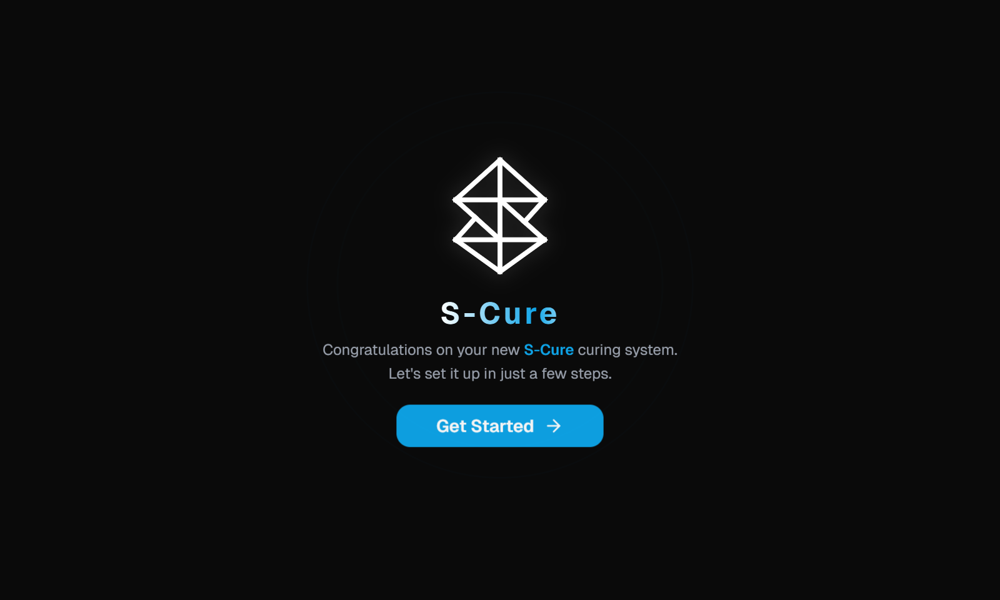
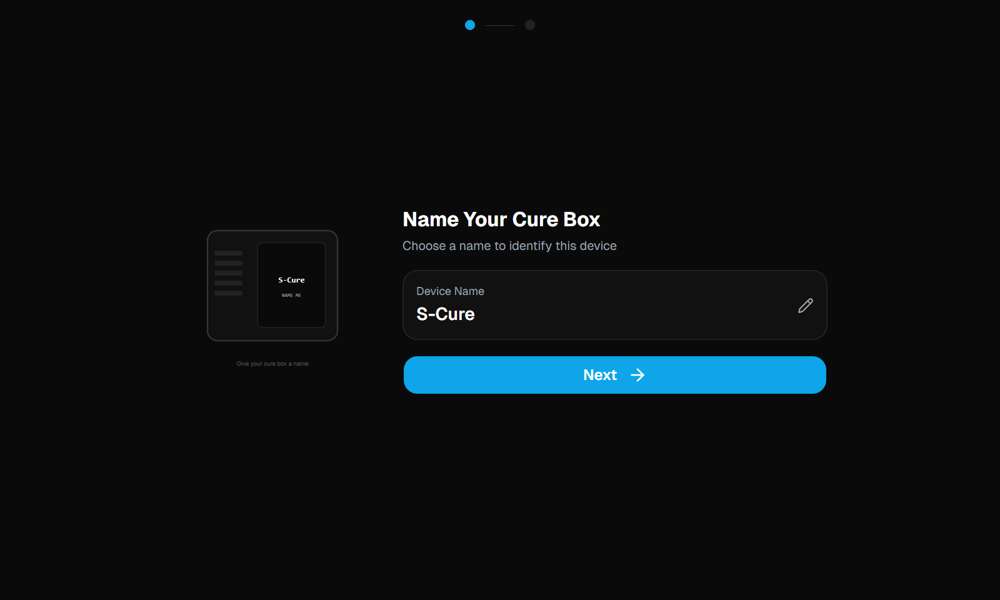
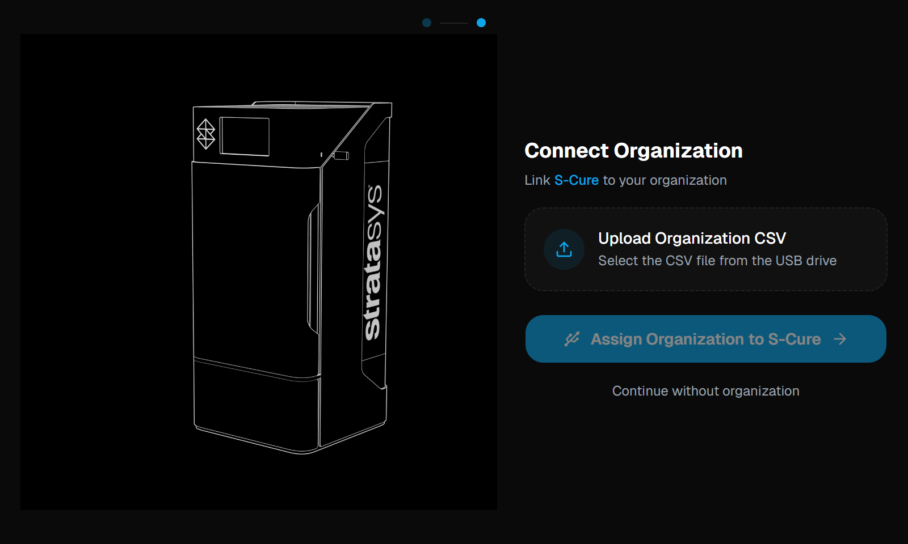
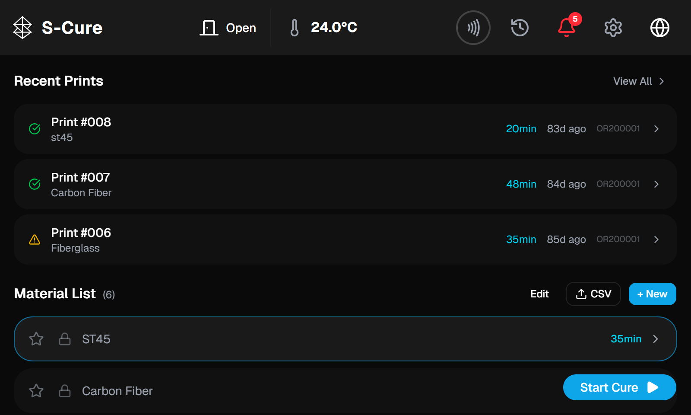

Table of Contents
- 1. Introduction & System Overview
- 2. Definitions & Abbreviations
- 3. Setup Screen
- 4. Setup Name Screen
- 5. Connect Organization Screen
- 6. Home Screen
- 7. Cure Process Screen
- 8. Cure History Screen
- 9. Error Management, Alerts Screen & Registry
- 10. Data Architecture & Persistence
- 11. Settings Screen
- 12. Open Issues
1. Introduction & System Overview
1.1 Purpose
The sCure Box is a post-processing unit that complements the Origin printer. It is part of the manufacturing process: it takes a printed resin part and brings it to a finished, ready-to-use state through a controlled, repeatable post-process run from a stored Material (program).
The system is designed to ensure:
- Optimal mechanical properties of the printed parts.
- Maximum accuracy obtained from the printer.
- A uniform and consistent workflow.
- A complete, high-quality post-process for the user, with a record (cure report) of every run.
This revision of the SRS specifies the behavior of the sCure CS firmware, version 1.0.106 (touchscreen UI and machine firmware running on the unit). Where this document and the firmware differ, the difference is listed as an Open Issue (§12).
1.2 Core Mechanisms
A Material is an ordered list of steps. Each step uses one of six process types; the unit executes the steps one after another as a single, uninterrupted run, from the moment the part is loaded and the run is started until the part is ready for use. The process types are:
| # | Process (UI name) | Role in the workflow | The step ends when |
|---|---|---|---|
| 1 | Drying | Heats the chamber to a low target temperature with the damper closed; once the target is reached the damper opens and the chamber intake fan runs, so moisture is vented while the temperature is held. | The target is reached and the step's hold time has elapsed. |
| 2 | Heating | Heats the chamber to the target temperature (damper closed) and holds it. | The target is reached and the step's hold time has elapsed. |
| 3 | Cure | Exposes the part to 405 nm UV light at the step's UV intensity, normally at a chamber target temperature. A Cure step without a temperature is UV-only (no heating). | The step's hold time has elapsed (counted from the target being reached, or from the step start, as the step specifies). |
| 4 | Bleaching | As Cure, with 450 nm light. | As Cure. |
| 5 | Nitrogen | Purges the chamber with nitrogen (N2). Nitrogen steps are executed only when Nitrogen Mode is switched on in Settings (§11); otherwise they are skipped. | A fixed purge time has elapsed. |
| 6 | Cooling | Switches UV and heating off, opens the damper and runs the fans to bring the chamber down at the selected rate (Fast / Medium / Slow). | The chamber has reached the step's target temperature. |
The step parameters and their limits (temperature, hold time, UV intensity, cooling rate, timer start / UV start) are defined with the Material editor (§6), and the run-time sequencing, transition rules, pause / resume / abort and supervision are specified in the Cure Process section (§7). Throughout a run, and also when the unit is idle, the firmware supervises the door, the temperature sensors, the fans and the UV LED panels, and stops the outputs on a fault (§7, §9).
At every power-on the unit runs a boot self-test (door, temperature sensors, 405 nm and 450 nm UV LEDs, chamber fans, firmware API) before the Setup or Home screen is shown (§3.3.1).
1.3 Connectivity & Monitoring
The unit gives the user continuous access to the state of the process on its own touchscreen (Cure Process, Cure History and Alerts screens, §7–§9). When a cloud connection is configured on the unit, the firmware also synchronizes with sCure Cloud at a regular interval, so the process can be monitored remotely from start to end. The synchronized information includes:
- System state (chamber temperature, door, heating / cooling / UV status, internet status, component run-time counters).
- The user Materials (programs).
- Recent prints and recent cure runs (summaries, without the full telemetry).
- Alerts and errors raised and cleared during the last 48 hours.
sCure Cloud may send data-only commands back (add / update / delete a Material, send a print); the cloud has no command that actuates the hardware. A DVT test requested from sCure Cloud runs only after the operator confirms it with Start on the unit's screen. Deleting a cure run on the unit also deletes its report from sCure Cloud. [GrabCAD presentation — Open Issue OI-29]
1.4 Interface Reference
The user interface, screen structure and navigation are defined in the accompanying reference HTML file (sCure-UI.html). That file is the single source of truth for the interface. This SRS specifies what each screen does (purpose, logic, requirements) and references the HTML for how it looks and how the user moves between screens; a dedicated placeholder is provided per screen for an accompanying screenshot of the reference UI.
2. Definitions & Abbreviations
| Term | Meaning |
|---|---|
| Printer (Origin) | The 3D printer — the Origin printer — that produces the parts. The sCure Box is its companion post-processing unit: it receives each printed part from the printer and brings it to a finished, ready-to-use state. |
| sCure / sCure Box / unit | The post-processing machine specified in this document. "sCure" is the product name used in the UI. |
| sCure CS | The firmware and touchscreen UI that run on the unit (this revision: version 1.0.106). |
| Post Process | The set of finishing steps applied to a printed part to make it ready for use. |
| Material (program) | A named, ordered list of steps that the user selects and runs; presets ship with the unit, user Materials can be created, edited and imported. |
| Step / Process | One entry of a Material, of one process type: Drying, Heating, Cure, Bleaching, Nitrogen or Cooling (§1.2). |
| Run (cure run) | One execution of a Material on the unit, with its own identifier, timings, telemetry and cure report. |
| Ramp / Hold | Ramp: the part of a step spent reaching the target temperature. Hold: the part of a step spent at the target, counted by the step's hold time. |
| Cure / Bleaching | UV process steps at 405 nm (Cure) and 450 nm (Bleaching). |
| Nitrogen Mode | Settings switch that allows Nitrogen (N2) purge steps to run (§11). |
| Boot self-test | The checks run at power-on before Setup / Home: Door Closed, Temperature Sensors, UV LEDs 405nm, UV LEDs 450nm, Chamber Fans, API Server (§3.3.1). |
| Planned restart | A restart after a clean stop of the firmware (reboot from Settings, software update, self-restart) at most 10 minutes earlier; the boot self-test then skips the UV LED and fan checks (§3.3.1). |
| Setup (onboarding) | The first-run sequence Welcome → Serial Number (when needed) → Name → Link Organization (§3–§5). |
| SN | Serial Number — the unique identifier of a sCure Box unit, entered at Setup by scanning its barcode label (§3.3.3). It is shown in Settings and written into every cure run and cure report. |
| USB barcode scanner | A USB scanner that acts as a keyboard (types the code and Enter); the unit reads it without a text field having focus. |
| Device password | The service password (PIN) that unlocks Developer Mode; at Setup it also unlocks typing the SN by hand (§3.3.3). |
| System Name (Device Name) | The human-readable name the user gives the unit at Setup (field "Device Name", §4) or later in Settings; shown in the top bar and in cure reports. |
Organization / organizationId | The user's Origin organization, identified by a UUID, linked to the unit from a CSV file on a USB drive or by signing in to Origin (§5). |
| UI settings file | ui-settings.json in the unit's data directory (/var/lib/scurebox on the unit): holds the values set on the machine — SN, System Name, organizationId, setupComplete, Nitrogen Mode, favorites, Developer Mode (§3.5). |
| System identity file | system.json in the installed configuration directory: the factory identity shipped with the firmware (model, hardware revision, default SN / organization / setupComplete). It is replaced by every installation and is read-only for the UI (§3.5). |
| Storage | The unit's eMMC storage holding the installed firmware, the configuration directory and the data directory. |
| sCure Cloud | The remote service the unit synchronizes with (state, Materials, prints, cure summaries, alert log) and from which data-only commands and DVT test requests are received (§1.3). It is configured per unit (service URL, machine key, display name, interval). |
| Origin website | The Origin web application (app.origin.io) on which the user signs in to link the organization (§5). |
| GrabCAD | Cloud platform named in earlier revisions as the presentation channel for process information; not used by sCure CS 1.0.106 (OI-29). |
Note: sCure Cloud (monitoring and data synchronization) and the Origin website (organization sign-in) are distinct services. Neither assigns the SN in sCure CS 1.0.106.
3. Setup Screen
3.1 Purpose
The Setup screen performs the first-run configuration of the unit. It is a full-screen wizard that is responsible for:
- Recording the unit's Serial Number (SN) by scanning its barcode label, when the unit does not have one yet (§3.3.4).
- Naming the unit (Name step, §4).
- Linking the unit to an organization, or skipping that (Link Organization step, §5).
- Saving the configuration and marking Setup as complete.
- Creating a positive first-use experience, giving the user the feeling of being the first to open the device.
Setup is shown after the boot self-test whenever Setup has not been completed (§3.3.2). After Setup completes, the user is taken to the Home screen (§6). In sCure CS 1.0.106 Setup does not contact sCure Cloud: there is no cloud SN assignment and no cloud registration step [OI-30].
Source: sCureBox-CS/src/SCureBox.Ui/ViewModels/Pages/SetupViewModel.cs, BootViewModel.cs, Services/BootSelfTest.cs, Services/BarcodeScanner.cs, Services/UiSettingsStore.cs.
3.2 Interface Reference
The visual layout of the Setup screen and the Get Started entry point are defined in the reference HTML file (sCure-UI.html), which is the source of truth for the screen. This section specifies only the Setup logic. Once the user leaves the Welcome step, a step indicator shows the Setup steps; the Serial Number step appears in it only when that step is needed.

Get Started). Reference UI: sCure-UI.html, which remains the source of truth for layout and navigation.3.3 Setup Process
The process starts at power-on with the boot self-test, then decides between Setup and Home, and — for Setup — proceeds through the ordered steps below.
3.3.1 Step 0 — Power-on boot self-test
At every start of the firmware the Boot screen shows the logo and then runs the following checks, one after another, in this order:
| # | Check (UI label) | Passes when | On failure the screen shows |
|---|---|---|---|
| 1 | Door Closed | The door sensor reads closed. While the door is open the screen shows "Close the door to continue" and waits up to 60 s. | "The door is open - close it and retry", or "The door sensor is not reading". |
| 2 | Temperature Sensors | Every supervised temperature sensor (chamber and LED panel sensors) and both side-panel sensors give a valid reading; the check waits up to 5 s after start-up for the first reading. | "Not reading: <sensor list>". |
| 3 | UV LEDs 405nm | The 405 nm panels are lit for 15 s and the panels warm up by at least 0.8 °C (same test as the Settings LED Test, §11). | The LED test's message, or "The LED test failed". |
| 4 | UV LEDs 450nm | As check 3 for the 450 nm panels, lit for 30 s. | As check 3. |
| 5 | Chamber Fans | No fan fails the fan test (Settings fan test, all fans, §11). A fan rated "worn" (warning) still passes. | "Not spinning: <fan (RPM)> …", or "The fan test failed". |
| 6 | API Server | The firmware's state interface answers. | "The firmware API is not answering". |
Rules:
- The UV LED checks (3, 4) shall run only when check 1 passed. With the door not closed they are reported as failed with "Skipped - the door is not closed"; no UV light is switched on.
- Planned restart: when the previous firmware stop was clean (reboot from Settings, software update, firmware self-restart) and happened at most 10 minutes before the start, checks 3, 4 and 5 are passed without being run, so the unit is back within seconds. After a power loss, crash or watchdog stop (no clean stop recorded) the full self-test runs.
- When no IO board is present (simulation), checks 2–5 pass immediately.
- A check that cannot run is reported as failed ("The check could not run: …").
- When all checks pass, the screen shows "All systems operational" and proceeds by itself to the Setup gate (§3.3.2).
- When one or more checks fail, the screen stays on the result ("<n> of 6 checks failed", with the reason per check) and offers Retry (runs all checks again, without the logo) and Continue anyway (proceeds to the Setup gate despite the failures). A failed self-test does not lock the unit and raises no alert. [OI-33]
3.3.2 Step 0b — Setup gate
After the self-test the system reads setupComplete (§3.5): the value saved on the machine, otherwise the factory value in the system identity file.
- If Setup is complete → the system shows the Home screen (§6).
- If Setup is not complete → the system shows the Setup Welcome step (§3.3.3).
Setup is shown again when the user unlinks the organization in Settings, which clears organizationId and setupComplete (§5.3.7, §11). The SN and the System Name are kept, so a repeated Setup skips the Serial Number step and pre-fills the name.
3.3.3 Step 1 — Welcome
The Welcome step greets the user ("Congratulations on your new sCure curing system. Let's set it up in just a few steps.") and offers Get Started. When the user presses Get Started, the system checks whether an SN is already stored (§3.5: the SN saved on the machine, otherwise the SN in the system identity file):
- If an SN is stored → the Serial Number step is skipped and the Name step (§4) is shown.
- If no SN is stored → the Serial Number step (§3.3.4) is shown.
3.3.4 Step 2 — Serial Number
The Serial Number step records the unit's SN from the barcode label using a USB barcode scanner.
- The step shall wait for a scan ("Scan the barcode" / "Waiting for the scanner..."). A scanner connected while the step is shown shall be detected automatically.
- A scanned code is accepted only while this step is on screen. A valid SN is 3–40 characters: letters and digits, and after the first character also
._/-. Surrounding spaces are removed. - On a valid scan the step shows "Serial number scanned" with the SN, and Next becomes enabled. Scanning again replaces the SN.
- On an invalid code the step shows "<code> is not a valid serial number" (the code shortened to 40 characters) and keeps waiting; an SN accepted earlier in the step is kept.
- The step cannot be skipped: Next stays disabled until a valid SN has been scanned (or typed, below). There is no way back to the Welcome step from it.
- Manual entry (service): ten taps on the barcode label picture open the device-password pad. With the correct password the SN field opens the on-screen keyboard so the SN can be typed; the same validity rule applies. Entering the password here does not leave Developer Mode switched on.
- On Next the SN is saved on the machine (§3.5) and the Name step (§4) is shown. From then on the SN is shown in Settings and written into every cure run and cure report.
The SN cannot be changed later from the UI. [SN uniqueness / later change — OI-30]
3.3.5 Steps 3 and 4 — Name and Link Organization
The Name step is specified in §4 and the Link Organization step in §5. Setup ends on the Link Organization step, which marks Setup as complete and shows the Home screen.
3.3.6 Steps of earlier revisions not performed by sCure CS
sCure CS 1.0.106 does not restore the SN from an SD backup, does not check the internet connection, does not request the SN from a cloud service and does not register the unit in a cloud during Setup. The registry entries 3001 (Serial Number Restore Failed), 3002 (Cloud Communication Failed) and 3003 (No Internet Connection) are therefore never raised. [Open Issue OI-30]
3.4 Setup Flow Chart
Swimlane activity diagram with lanes Storage, UI sCure and Machine. UI sCure is placed in the middle because it interacts with both the stored configuration and the machine (self-test, barcode scanner), so no connector has to cross a third lane. Solid start node, rounded action boxes, decision diamonds and labelled branches; success paths end in a filled final node (●). The flow has no terminal error: self-test failures can be retried or passed over, and an invalid scan returns to the scan wait.

docs/diagrams/setup-flow.drawio.✎ Edit this diagram — drag every box and line freely with the mouse. The editable source is docs/diagrams/setup-flow.drawio (draw.io / diagrams.net). Two ways to open it:
• In VS Code: install the Draw.io Integration extension (hediet.vscode-drawio), then just open setup-flow.drawio — it opens in a visual editor and saves straight back to the file.
• In the browser: go to app.diagrams.net → Open Existing Diagram → Device and pick the .drawio file.
After editing, re-render with node tools/drawio-to-svg.mjs docs/diagrams/setup-flow.drawio docs/screenshots/setup-flow.svg then node tools/svg-to-grid-png.mjs docs/screenshots/setup-flow.svg docs/screenshots/setup-flow.png to refresh the image above.
3.5 Configuration Storage
The values set during Setup are kept on the unit's storage in two files. A value saved on the machine always takes precedence over the factory value.
| File | Role | Location on the unit |
|---|---|---|
UI settings file (ui-settings.json) | Values set on the machine: serialNumber, systemName, organizationId, setupComplete, Nitrogen Mode, favorites, Developer Mode. Kept across firmware installations and updates. | Data directory, /var/lib/scurebox/ui-settings.json |
System identity file (system.json) | Factory identity shipped with the firmware (model, hardware revision, manufacturer) and the defaults for serialNumber, organizationId and setupComplete. Read-only for the UI; replaced by every installation. | Configuration directory of the installed firmware (config/system.json) |
- Each change is written to the UI settings file at once, by writing a temporary file and replacing the old file, so an interrupted write does not leave a partly written file.
- If the UI settings file cannot be written, the fault is logged; the user is not informed and the flow continues. If it cannot be read, the defaults are used (Setup not complete, no SN saved on the machine). [OI-31]
- There is no secondary (SD) backup copy of the configuration in sCure CS 1.0.106; OI-6 does not apply. [OI-31]
4. Setup Name Screen
4.1 Purpose
The Name step of Setup lets the user assign a human-readable name, the System Name, to the unit. The user reaches it after Get Started (§3.3.3), or after the Serial Number step when that step is shown (§3.3.4). The name identifies the unit:
- In the local interface (top bar, Settings, the Link Organization subtitle).
- In cure runs and cure reports.
- For convenient identification of the device in the lab when several units are present.
The System Name is not sent to sCure Cloud in sCure CS 1.0.106. [OI-32]
4.2 Interface Reference
The visual layout of the Setup Name screen is defined in the reference HTML file (sCure-UI.html), which is the source of truth for the screen. This section specifies only the logic.

sCure-UI.html, which remains the source of truth for layout and navigation.The step presents the title Name Your Cure Box, the hint "Choose a name to identify this device", a Device Name field and a Next button. The field is pre-filled with the saved System Name, or with the default sCure when none has been saved (resolves OI-7). An illustration of the unit shows the name as it is typed.
4.3 Screen Logic
4.3.1 Step 1 — Display the name field
The system displays the Device Name field pre-filled as above; Next is enabled at once, so the default can be accepted without typing.
4.3.2 Step 2 — Text entry
When the user taps the name field, the system opens the on-screen keyboard with the current name. Closing the keyboard keeps the text typed so far.
4.3.3 Step 3 — Validation
- If the name is empty or consists of spaces only → Next is disabled and the field shows "Tap to enter name...".
- Otherwise → Next is enabled. No further rule (length, allowed characters, uniqueness) is applied. [Open Issue OI-8]
4.3.4 Step 4 — On Next
When the user presses Next, the system:
- Removes leading and trailing spaces and saves the name as the System Name in the UI settings file (§3.5).
- Proceeds to the Link Organization step (§5).
The name is saved again when Setup finishes on the Link Organization step.
4.4 System Variable — systemName
| Variable | Purpose |
|---|---|
| systemName | The System Name (earlier revisions: device_name). Used to identify the unit in the top bar, in Settings, on the Link Organization step and in cure runs / cure reports. |
On start-up the value is loaded from the UI settings file and is available to all screens; a change is shown at once. The name can be changed later in Settings (§11); saving an empty name there restores the default sCure.
4.5 Data Persistence
The value is stored in the UI settings file (§3.5). There is no secondary backup copy.
{
"systemName": "Lab Cure Box 01"
}4.6 Flow Diagram
Swimlane activity diagram (lanes Storage and UI sCure) showing the process logic and Yes/No decisions; success ends in a filled final node (●). This step does not contact any cloud service — the name is persisted locally only — and has no terminal error.

docs/diagrams/setup-name-flow.drawio.✎ Edit this diagram — drag every box and line freely with the mouse. The editable source is docs/diagrams/setup-name-flow.drawio (draw.io). Open it in VS Code with the Draw.io Integration extension (hediet.vscode-drawio), or in app.diagrams.net (Open Existing Diagram → Device). After editing, re-render with node tools/drawio-to-svg.mjs docs/diagrams/setup-name-flow.drawio docs/screenshots/setup-name-flow.svg then node tools/svg-to-grid-png.mjs docs/screenshots/setup-name-flow.svg docs/screenshots/setup-name-flow.png to refresh the image above.
4.7 Error Handling
| Fault | Behavior |
|---|---|
| Empty / spaces-only name | Next stays disabled; no message and no alert is raised (registry entry 4001 describes this case but is not raised by sCure CS). |
| Configuration save failure (UI settings file) | The fault is logged; no message is shown and the user proceeds to the next step. [OI-31] |
5. Connect Organization Screen
organizationId to sCure Cloud (OI-32) and the sign-in methods available on the unit (OI-34).5.1 Purpose
The Link Organization step (UI title Link Organization) is the final Setup step. It links the unit to the user's Origin organization so the unit is associated with the correct organizational account. The user may also skip this step and continue without an organization. Without an organization, the Home screen does not show print history (§6).
5.2 Interface Reference
The visual layout of the Connect Organization screen is defined in the reference HTML file (sCure-UI.html), which is the source of truth for the screen. This section specifies only the logic.

sCure-UI.html, which remains the source of truth for layout and navigation.5.3 Screen Logic
5.3.1 Step 1 — Display the options
The step presents the title Link Organization and the subtitle Link <System Name> to your organization, together with:
- Upload Organization CSV ("Select the CSV file from the USB drive").
- Sign in to Origin ("Use your Origin account").
- A Link Organization button, disabled until an organization has been found.
- Continue without organization.
The two source options are hidden while an organization is shown as found.
5.3.2 Step 2a — Upload and read the CSV
When the user taps Upload Organization CSV, a USB file browser opens ("Select organization CSV"). It lists the .csv files on every mounted USB drive, in the drive's root folder and up to two folder levels below it (hidden folders are skipped; at most 200 files). With no CSV file on any USB drive it shows "No CSV file found on a USB drive". Closing the browser without a choice leaves the step unchanged.
The system reads the chosen file as text and searches it for an Organization ID — a UUID (hexadecimal, format 8-4-4-4-12, upper or lower case). The first UUID found anywhere in the file is taken [CSV schema — Open Issue OI-10].
- If a UUID is found → the step shows "Organization Found" with the ID and "from <file name>", and Link Organization becomes enabled.
- If no UUID is found, or the file cannot be read → the message "No valid organization ID found in CSV file" is shown; no Organization ID is set and Link Organization stays disabled. The user may select another file.
5.3.3 Step 2b — Sign in to Origin
When the user taps Sign in to Origin, the system opens the Origin website (app.origin.io, the sign-in address configured on the unit) inside a Sign in to Origin dialog. The user signs in on the website as on a computer; tapping a text field of the website opens the on-screen keyboard (password fields are masked).
- The system shall take only the organization (its
organizationIdUUID, and the account name / e-mail for display) from the signed-in website. Nothing about the sign-in is stored on the unit: each sign-in uses a new, empty browser profile that is deleted afterwards. The dialog states "Only the organization is taken from your account. Nothing about your sign-in is stored on this machine." - On success the dialog closes and the step shows "Organization Found" with the ID and "from Origin account <e-mail or name>"; Link Organization becomes enabled.
- If the sign-in does not finish within the configured time (default 300 s, limited to 30–1800 s) the dialog shows "Sign-in took too long - try again". Other failures show "Origin sign-in failed - try again", "No web browser found on this machine" or "Origin sign-in is not set up on this machine". The user can choose Try Again or cancel; cancelling leaves the step unchanged.
The Origin sign-in needs an internet connection; the step does not check the connection beforehand. [Sign-in methods on the unit — OI-34]
5.3.4 Step 2c — Change
While an organization is shown as found, Change clears it so the user can choose a source again.
5.3.5 Step 3 — Link the organization
When the user presses Link Organization (enabled only when an Organization ID is found), the system saves the System Name, sets organizationId, marks Setup as complete (setupComplete = true), persists the configuration (§5.4) and shows the Home screen.
5.3.6 Step 4 — Continue without organization
The user may skip this step. The system marks Setup complete without an Organization ID (organizationId is saved empty), persists the configuration and shows the Home screen.
5.3.7 Later changes (Settings)
An organization is optional. It may be linked or changed later from the Settings screen, with the same two sources (CSV on a USB drive, Sign in to Origin) and the same UUID rule (§11). Unlink in Settings clears organizationId and setupComplete and opens Setup again (§3.3.2). organizationId is not sent to sCure Cloud in sCure CS 1.0.106. [OI-32]
5.4 System Variables & Data Persistence
| Variable | Meaning |
|---|---|
| organizationId | The organization's UUID, from the CSV file or the Origin account. Empty when no organization is linked. |
| setupComplete | Marks the Setup sequence as completed; decides between Setup and Home after the boot self-test (§3.3.2). |
Both values are saved in the UI settings file (§3.5), the same way as the SN and the System Name; until they are saved there, the defaults of the system identity file apply. There is no secondary backup copy.
5.5 Flow Diagram
Swimlane activity diagram (lanes Storage, UI sCure and Cloud (Origin website)) showing the process logic and decisions; success ends in a filled final node (●). An invalid CSV, a cancelled file choice and a failed Origin sign-in are recoverable — they show a message and return to the choice of source (no flow-final).

docs/diagrams/setup-org-flow.drawio.✎ Edit this diagram — drag every box and line freely with the mouse. The editable source is docs/diagrams/setup-org-flow.drawio (draw.io). Open it in VS Code with the Draw.io Integration extension (hediet.vscode-drawio), or in app.diagrams.net (Open Existing Diagram → Device). After editing, re-render with node tools/drawio-to-svg.mjs docs/diagrams/setup-org-flow.drawio docs/screenshots/setup-org-flow.svg then node tools/svg-to-grid-png.mjs docs/screenshots/setup-org-flow.svg docs/screenshots/setup-org-flow.png to refresh the image above.
5.6 Error Handling
| Fault | Behavior |
|---|---|
| Invalid / missing Organization ID in CSV, or unreadable file | The message "No valid organization ID found in CSV file" is shown on the step (no alert; registry entry 5001 describes this case); the selection is rejected and Link Organization stays disabled. The user may select another file. |
| No CSV file on any USB drive | The file browser shows "No CSV file found on a USB drive". |
| No file selected | No action is taken; the step remains unchanged. |
| Origin sign-in time-out or failure | The sign-in dialog shows the reason (§5.3.3) with Try Again; cancelling returns to the step unchanged. |
| Configuration save failure (UI settings file) | The fault is logged; no message is shown and the Home screen is shown. [OI-31] |
6. Home Screen
6.1 Purpose & General Page Behavior
The Home screen is the system's main hub — the central page from which the operator oversees and runs all of the sCure Box's work. It is shown once onboarding is complete and is the entry point for normal, day-to-day operation. From Home the operator can:
- review the box's recent work — the recent prints handed to the box for finishing;
- manage the library of curing programs (Materials) — both the programs provided by the system (built-in presets) and the operator's own user programs;
- define the curing process to run, by creating, importing, duplicating or editing a program — setting its steps, parameters and options; and
- select a program and start the cure.
In short, Home is where the operator decides which curing process to run — choosing one of the programs provided by the system or defining their own — and launches it.
Main areas. (1) the persistent top bar — status & navigation (§6.3); (2) the Recent Prints list (§6.4); (3) the Program List — the material programs (§6.5); (4) the floating Start Cure action (§6.7, §6.8).
Default state on load. Every time Home is shown, its state is rebuilt: the program list is re-read (presets + user programs, favorites first), the favorites and the organization link are re-read, and the recent prints are re-read. No program and no print is pre-selected — a selection made earlier is not kept when the operator leaves Home and comes back (for example after a cure). While the programs load the list shows "Loading materials...".
When the page is ready to proceed. The page can start a cure when a program is active: a program row is selected, or a recent print is selected and its material name resolves to a program (§6.4). Start Cure is shown as disabled (grey) whenever no program is active, the chamber door is open, or a critical alert is active; the exact gates and what a press does in each case are in §6.7 and §6.8.
Empty / missing data.
- No organization linked → Recent Prints shows the "No organization" card and View All is hidden (§6.4); the Program List and Start Cure are unaffected.
- No recent prints (organization linked, empty history) → "No prints yet."
- No programs → "No materials yet. Upload a CSV or create a new material."; the Edit button is hidden and Start Cure stays disabled.
Dependencies. The Program List depends on the material store (PostgreSQL when the database is available, otherwise the JSON files — §10.1); Recent Prints depend on the print-history store and on the organization link; favorites, the organization link and Nitrogen Mode come from the unit's UI settings (ui-settings.json, §10); the Start Cure gates depend on the machine state (door, refreshed about once per second) and on the active alerts (§9). Displaying the page and starting a cure require no live printer connection and no cloud call. Source: src/SCureBox.Ui/ViewModels/Pages/HomeViewModel.cs.
6.2 Interface Reference
The visual layout of the Home screen and the top bar are defined in the reference HTML file (sCure-UI.html), which is the source of truth for the screen. This section specifies only the logic.

sCure-UI.html, which remains the source of truth for layout and navigation.6.3 Top Bar / Page-Level Controls

The top bar is shared by all main screens. It is refreshed whenever the machine state (about once per second), the alerts, the settings or the current screen change. Source: src/SCureBox.Ui/ViewModels/TopBarViewModel.cs.
| Control | Behavior |
|---|---|
| Back arrow | Shown on every screen except Home and the Cure Process screen. Returns to the previous screen; when there is no previous screen it opens Home. |
| Logo + name | Shows the sCure logo and the unit's system name (§4; default "sCure"). No action. |
| Door | Hidden on the Cure Process screen. When the door is closed (or its state is not yet known) it reads "Open Door"; tapping it asks the machine to open the door and the button immediately shows "Door Open" (the next machine-state refresh confirms or corrects it). When the door is open it reads "Door Open", is highlighted and is disabled. |
| Temperature | Display only, hidden on the Cure Process screen (the cure screen shows it itself). Shows the chamber temperature to 0.1 °C ("--.-°C" when no reading), plus a "Target: N°C" line while a target is set. The value turns red once the heater has been on continuously for more than 10 s. |
| DEV | Shown only in Developer Mode and not on the developer screens; opens the developer menu (inert during a cure). |
| N₂ | Indicator only, shown while Nitrogen Mode is on (Settings, §11); shows an "active" state while nitrogen is flowing. |
| NFC | Indicator only, shown when NFC is enabled and the USB NFC reader is detected (also shown while detection has not reported yet). |
| History | Opens the Cure History screen (§8). |
| Alerts (bell) | Opens the Alerts screen (§9.7). Shows a badge with the number of active alerts; the bell is red when any critical alert is active, orange when only warnings are active. |
| Settings (gear) | Opens the Settings screen (§11). A repeated press sequence on this button requests Developer Mode instead (password dialog, §11). |
| Network (globe) | Opens the Network screen; shown red when the internet check reports the connection down. |
During a cure (the Cure Process screen is shown) the History, Alerts, Settings, Network and DEV controls are inert, and the Back arrow, Door and Temperature are hidden. Moves between top-level screens replace the previous screen in the navigation history, so Back from any of them returns to Home. None of the top-bar controls change Home's selection.
6.4 Recent Prints
Purpose. Recent Prints surfaces the most recent prints handed to the box directly on the Home screen, so the operator can see and select a recent print at a glance — without opening the full Print History. The complete list is available via View All (§6.4.1).

Data source & persistence. The list comes from the on-device print-history store, not from a live cloud call. With the database available the store is PostgreSQL (tables prints / jobs / printers, read through the view v_print_history, which orders by date, newest first); otherwise it is the JSON file print_history.json, read in its stored order (§10). The same store is exposed on the local API as GET /api/print-history and replaced as a whole by POST /api/print-history. The data persists across application restart and reboot.
Where entries come from. In CS 1.0.106 a print entry is created (a) by the cloud portal's send_print command — the new entry is put at the front of the history (§10.6) — or (b) by a full replace through POST /api/print-history. The box does not add a print entry when a cure finishes; instead, prints cured through View All are removed from the history when that cure completes (§6.4.1). [the write path of a print after a cure and the organization scope remain open — OI-12]
Record schema (what each print stores).
| Field | Meaning |
|---|---|
| id | Unique print/job identifier. |
| printName | Print/job name. |
| materialName | The material/program used — the key used to resolve the program to run (see Selection below). |
| printerName | Originating printer name. |
| date | Date/time of the print (local time, ISO format). |
| duration | Run time in seconds; shown as whole minutes, rounded up ("N min"). [unit of the cloud-supplied value — OI-38] |
| status | completed / ok / success → green ✓; aborted / warning / partial → orange ⚠; any other value → red ✕. |
| steps | Number of steps in the job. |
| csvFile | Source CSV reference for the recipe (stored, not used by Home). |
The print stores the material name — not the recipe. The recipe that runs is the program the name resolves to at selection time.
What is shown on Home. The first 3 entries of the store (newest first with PostgreSQL; stored order with the JSON file — new entries from the portal are added at the front), each with: status icon, print name, material name, duration, relative time, and printer name. The relative time is "Nm ago" below 60 minutes, "Nh ago" below 24 hours, otherwise "Nd ago". The full date/time is shown in View All (§6.4.1).
Selecting a recent print. Tapping a print row toggles its selection. On selection the system:
- clears the Program List selection (only one source of the active program at a time);
- resolves the program by name — the first program in the Program List order (favorites first, §6.5) whose name equals the print's
materialNamebecomes the active program; - if no program has that name, no program is active and Start Cure stays disabled, without a hint;
- tapping the selected print again deselects it (no active program).
Selecting a print performs no printer or cloud validation. Starting the cure is subject to the Start Cure gates (§6.8). A cure started from a Recent Prints selection does not remove the print from the history.
Same material more than once. Curing several prints of the same material in one run is done from View All with Cure Together (§6.4.1); the rule is material-name equality — prints of the same material may be combined, prints of different materials may not. [further business constraints — trays / channels / positions — are not in the code: Open Issue OI-15]
Empty states.
- No prints in the store (organization linked) → "No prints yet."
- No organization linked → a card "No organization — Link an organization in Settings to view print history" is shown instead of the list, and View All is hidden (§5).
6.4.1 View All — Print History
Purpose. The Print History view gives the operator the full record of prints handed over to the sCure Box for finishing. From it the operator can take any print and run its post-process — the cure — on the part, alone or together with other prints of the same material.

The View All button. Shown in the Recent Prints header only when an organization is linked. It opens the Print History dialog over Home; it does not select or modify anything by itself.
The Print History view. Lists all entries of the same store as Recent Prints, sorted by date, newest first (entries without a readable date last). The title reads "Print History (N)", or "Print History (shown/total)" while filters hide entries, followed by "— N selected" while prints are selected. Source: src/SCureBox.Ui/ViewModels/Dialogs/PrintHistoryDialogViewModel.cs.
- Per entry — a selection checkbox, status icon, print name, material name, date and time, duration (minutes, rounded up) and the printer name.
- Filtering (Filters panel). The Filters button opens the filter bar and shows the number of active filters. Filters:
- Material — "All Materials" plus every material name present in the history (alphabetical).
- Printer — "All Printers" plus every printer name present in the history (alphabetical).
- From / To — dates typed on the on-screen keyboard as
yyyy-mm-dd; To includes the whole end day. An entry without a readable date is hidden while a date filter is set; text that is not a valid date is ignored.
- Pick one (nothing selected) — tapping a row closes the dialog with that print's material and print id; Home then resolves the program by name and selects it (as a Program List selection). If no program has that name, nothing is selected. The cure is not started; the print id is kept so that, when the operator presses Start Cure on Home, the print is removed from the history once that cure completes. [OI-37]
- Multi-select — the checkbox toggles a row into the selection; once a selection exists, a row tap toggles it too. Clear Selection empties it. The message strip reads "Ready to cure <material>" (one print), "Ready to cure N× <material>" (several prints of one material) or "⚠ Cannot cure different materials together!".
- Cure Together — enabled only when every selected print has the same material name. It closes the dialog with that material and the selected print ids; Home selects the program by name and, when two or more prints are selected and the Start Cure gates are open (program found, door closed, no critical alert), immediately runs the Start Cure sequence (§6.8) with those print ids. Otherwise the program is only selected. When the cure completes, the selected print entries are removed from the print history; an aborted cure leaves them.
- Close — closes the dialog; Home is unchanged.
Selection and validation here depend only on the material names in the selection — there is no printer-state, cloud or live-job validation at this step.
Flow Diagram. Swimlane activity diagram (lanes UI, FW and Storage) of the View All → Print History flow: reading all prints from the same store, the filters, the single pick, the same-material check, Cure Together and the removal of the cured prints on completion.

docs/diagrams/view-all-flow.drawio.✎ Edit this diagram — drag every box and line freely with the mouse. The editable source is docs/diagrams/view-all-flow.drawio (draw.io). Open it in VS Code with the Draw.io Integration extension (hediet.vscode-drawio), or in app.diagrams.net (Open Existing Diagram → Device). After editing, re-render with node tools/drawio-to-svg.mjs docs/diagrams/view-all-flow.drawio docs/screenshots/view-all-flow.svg then node tools/svg-to-grid-png.mjs docs/screenshots/view-all-flow.svg docs/screenshots/view-all-flow.png to refresh the image above.
6.4.2 Organization Flow
Purpose. The sCure Box is usable by every customer — both those who own a Stratasys printer and those who do not. Customers with a linked organization see their prints as Recent Prints / Print History and can cure them directly; customers without one can still build programs and run cures. The organization link only gates the print-history display; it never gates curing.
Swimlane activity diagram (lanes UI, FW and Storage) of the Recent Prints flow: reading the print history, the organization / empty-store gating, display of the 3 most recent prints, and selecting a print → resolving its program by name → the Start Cure gates (§6.8).

docs/diagrams/recent-prints-flow.drawio.✎ Edit this diagram — drag every box and line freely with the mouse. The editable source is docs/diagrams/recent-prints-flow.drawio (draw.io). Open it in VS Code with the Draw.io Integration extension (hediet.vscode-drawio), or in app.diagrams.net (Open Existing Diagram → Device). After editing, re-render with node tools/drawio-to-svg.mjs docs/diagrams/recent-prints-flow.drawio docs/screenshots/recent-prints-flow.svg then node tools/svg-to-grid-png.mjs docs/screenshots/recent-prints-flow.svg docs/screenshots/recent-prints-flow.png to refresh the image above.
6.5 Material List (Program List)

The list is titled "Program List" with the number of programs in brackets. Source: src/SCureBox.Ui/ViewModels/Pages/HomeViewModel.cs, MaterialRowViewModel.cs.
Source. The list combines two sources of the material store (§10): the built-in presets (read-only; in PostgreSQL the preset rows seeded from the bundled presets, otherwise config/presets.json) and the operator's user programs (PostgreSQL, otherwise user_materials.json; always written back as a whole list). The cloud portal can also add, replace or delete user programs (§10.6). Programs are device-local — not organization-scoped. CS 1.0.106 ships six presets: ST45, Carbon Fiber, Fiberglass, ABS-Like, Dental Model and Flexible. [several presets do not satisfy the program rules of §6.7.2 — OI-35]
What each row represents. One material program — a curing recipe (an ordered list of steps). Each row shows a favorite star, a lock (preset) or a plus (user program), the program name, the estimated duration "~N min" (§6.7.3) and a chevron. The row icons are detailed in §6.6.
Order. Favorites first, then the other programs; inside each group the store order is kept (presets before user programs).
Selection is single. Tapping a row makes that program the active program, clears any recent-print selection and highlights the row. Tapping the selected row again keeps it selected (there is no deselect by re-tap). Only one program can be active at a time; curing several prints of the same material is a Print History feature (Cure Together, §6.4.1). While edit mode is on, row taps do not select (§6.7.5).
Resolution by name (from a print). When the active program comes from a print, it is the first program in the list order whose name equals the print's material name; if none matches no program is active. Program names are not required to be unique. [OI-39]
Effect on the page / next steps. Selecting a program makes Start Cure available, subject to the door and critical-alert gates (§6.7, §6.8). No other check runs at selection time.
6.6 Row-Level Actions & Icons
6.6.1 Star / Favorite

- Action. Tapping the star toggles the program as a favorite; the list is then re-read and re-ordered. It does not start anything.
- State & storage. The favorite set is a list of program ids stored on the unit in the UI settings (
ui-settings.json, fieldfavoriteMaterialIds). It is device-local — not per user, not per organization and not stored in the cloud. - Persistence. Favorites persist across restart and reboot. Deleting a user program also removes it from the favorites.
- Ordering. Favorites are listed first (in list order), not under a separate group header.
- Scope. Works for both presets and user programs. Recent Prints have no favorite control.
6.6.2 Lock (preset)

- The lock icon marks a preset — a built-in, read-only program. User programs show a plus icon instead.
- Presets cannot be edited or deleted; they can be duplicated (the copy is an editable user program, §6.7.5). [OI-36]
- In the cure flow presets behave exactly like user programs — they can be favorited, selected and cured.
6.6.3 Row click / arrow
- Tapping a row (outside the star and the edit-mode icons) selects the program. It does not open a details page.
- The chevron is decorative — it has no action of its own.
- Editing a program is reached through edit mode (§6.7.5), not by tapping the row.
6.7 Page Actions / Buttons

| Action | Trigger → behavior, preconditions, result, navigation, failures |
|---|---|
| Edit | Toggles edit mode (shown only when at least one program exists). In edit mode the button reads Done, every row offers Duplicate, user programs also offer Edit and Delete, and row taps do not select. Details in §6.7.5. |
| Duplicate (edit mode) | Saves a copy named "<name> Copy" (then "<name> Copy 2", "Copy 3"… until the name is unused) as a user program at once, then opens it in the program editor ("Edit Program"). Works on presets and user programs. |
| Edit (edit mode, user programs) | Opens the program in the program editor ("Edit Program"); Update Program saves it back under the same id. |
| Delete (edit mode, user programs) | Asks "Delete “<name>”?" — "The program will be removed from this machine. This cannot be undone."; on Delete the program is removed, cleared from the selection and from the favorites. Presets cannot be deleted. |
| CSV | Opens "Import from CSV" (§6.7.4): CSV files picked from a USB drive are checked and every valid file becomes a new user program at once; each file gets an Added / Failed result with its messages. The list is re-read when the dialog closes; imported programs are not auto-selected. |
| + New | Opens the program editor empty ("Build Cure Program", §6.7.1); on Save Program the new user program is stored and the list is re-read. The new program is not auto-selected. |
| Start Cure (floating) | Looks disabled (grey) when no program is active, the door is open or a critical alert is active; a hint above it reads "Close the door to start the cure" or "A critical alert is active" (no hint when simply nothing is selected). On press (possible whenever a program is active and no start is in progress): critical alert → "Critical alert active" dialog; door open → nothing; nitrogen-only program with Nitrogen Mode off → "Cannot Start Cure"; otherwise the system pre-check (fan test) runs and the Cure Process screen opens. The full sequence is in §6.8. |
| Top-bar navigation | History / Alerts / Settings / Network / Door — see §6.3. |
6.7.1 + New — Build Cure Program

Purpose. The program editor creates a user program (curing recipe) from scratch (+ New, title "Build Cure Program", button "Save Program") or changes an existing user program or a fresh duplicate (title "Edit Program", button "Update Program"). It opens as a dialog over Home; tapping outside it does not close it. Source: src/SCureBox.Ui/ViewModels/Dialogs/MaterialEditorDialogViewModel.cs, ViewModels/Editor/EditorRules.cs, StepCardViewModel.cs.
Initial state. + New opens with an empty name and no steps — the operator adds the first step. Edit and Duplicate open with the program's name and steps (the steps are normalised on load, §6.7.2).
- Name. Tapping the name field opens the on-screen keyboard; the text is trimmed. A name is required to save; uniqueness is not checked.
- Steps. The steps are shown as a horizontal strip of cards ("Step N"); every field is edited inline on its card. Which fields a card shows depends on the process (§6.7.2). Numeric fields open a number pad limited to the field's current range and have −/+ buttons (temperature ±5 °C, time ±1 min, UV ±5 %) that stop at the range ends.
- Add Step. Appends a step whose process is the one the sequence rules force (Cure after an N₂ purge; Cooling after the Cure/Bleaching that follows an N₂ purge), otherwise Heating, with the defaults of §6.7.2; the new card is brought into view.
- Delete a step. The trash icon on a card removes that step; the program may be emptied completely (saving an empty program is refused).
- Live rules. After every change the steps are renumbered, the Process list of each card is limited to the processes allowed at its position, and every value is pulled back into its current range (later heated steps are raised to the running minimum, Cooling targets are lowered to their ceiling) — §6.7.2.
- Footer summary. "N steps · H min holds · ~T min total": H is the sum of the step hold times (Cooling and N₂ contribute 0); T is the estimated real duration (§6.7.3).
- CSV export. The CSV button writes the steps in the 10-column CSV format (§6.7.4) to the connected USB drive as
<name>.csv(untitled.csvwithout a name). The footer shows the result: "Saved <file> to USB"; "No Disk-on-Key connected — connect one and try again" (alert 9081); or the write error (alert 9082). Export does not save the program and works whether or not the program is valid. - Cancel. Closes the editor and discards the unsaved changes. (A copy made by Duplicate is already saved before the editor opens and stays in the list.)
- Save Program / Update Program. Checked in this order, and only the first failing check is shown above the footer: a name ("Enter a material name"); at least one step ("Add at least one step"); then every program rule of §6.7.2 (for example "After an N₂ purge, add a Cure or Bleaching step", "Add a Cooling step after the Cure/Bleaching step that follows the N₂ purge", or the temperature-chain and range messages). On failure the editor stays open. On success the program is stored as a user program (a new id for + New; the same id when editing), its estimate is stored as
totalDuration, the editor closes and the Program List is re-read. The saved program is not auto-selected.
Swimlane activity diagram (lanes UI, FW and Storage) of the + New → Build Cure Program flow — the empty editor, editing under the step rules, CSV export to USB, Cancel, and the validated Save that stores a new user program.

docs/diagrams/new-program-flow.drawio.✎ Edit this diagram — drag every box and line freely with the mouse. The editable source is docs/diagrams/new-program-flow.drawio (draw.io). Open it in VS Code with the Draw.io Integration extension (hediet.vscode-drawio), or in app.diagrams.net (Open Existing Diagram → Device). After editing, re-render with node tools/drawio-to-svg.mjs docs/diagrams/new-program-flow.drawio docs/screenshots/new-program-flow.svg then node tools/svg-to-grid-png.mjs docs/screenshots/new-program-flow.svg docs/screenshots/new-program-flow.png to refresh the image above.
6.7.2 Step Types, Parameters & Sequencing
This is the reference for the step fields, limits and sequence rules. The same program rules are applied by the editor (live clamping + Save), by CSV import (§6.7.4) and, at Start, by the machine (§6.8, with one relaxation noted below). Source: src/SCureBox.Domain/Programs/ProgramValidator.cs, src/SCureBox.Ui/ViewModels/Editor/EditorRules.cs, StepCardViewModel.cs.
Processes offered (in this order): Drying · Heating · Cure (405 nm) · Bleaching (450 nm) · Cooling · N₂ Purge.
Fields per process (exactly the fields a step card shows):
- Heating — Process · Temperature · Time.
- Drying — Process · Temperature · Time.
- Cure (405 nm) — Process · Chamber Heating (On / Off) · Temperature, Timer Start and UV Start (only with Chamber Heating On) · Time · UV Intensity.
- Bleaching (450 nm) — as Cure.
- Cooling — Process · Target Temp · Cooling Mode (no Time).
- N₂ Purge — Process only, with the note "The N₂ purge runs automatically if nitrogen is enabled; otherwise it is skipped."
Per-step parameters & limits.
| Process | Temperature | Time | Extra parameters | What it does |
|---|---|---|---|---|
| Heating | 30–80 °C and ≥ the running minimum (see sequencing) | 1–120 min | — | Brings the chamber to the temperature and holds it for the time. |
| Drying | 30–50 °C and ≥ the running minimum | 1–120 min | — | Holds a drying temperature for the time. |
| Cure (405 nm) | Chamber Heating On: 30–80 °C and ≥ the running minimum. Chamber Heating Off: none (UV only) | 1–120 min | UV Intensity 10–100 % (default 30 %) · with heating On: Timer Start and UV Start | UV curing at 405 nm. |
| Bleaching (450 nm) | as Cure | 1–720 min (12 h) | as Cure | UV bleaching at 450 nm. |
| Cooling | Target Temp 30 °C up to the cooling ceiling: the last heated temperature − 5 °C (never below 30), or 75 °C when nothing was heated since the previous Cooling | None | Cooling Mode: Fast / Medium / Slow (default Medium) | Cools the chamber to the target; resets the running minimum and vents an N₂ purge. |
| N₂ Purge | None | None | — | Replaces the chamber air with nitrogen. Runs only when Nitrogen Mode is on; with Nitrogen Mode off the N₂ steps are dropped from the program when it is started (§6.8). |
Value entry. Values are whole numbers. The −/+ buttons move temperature by 5 °C, time by 1 min and UV intensity by 5 %; the number pad accepts any whole value inside the field's current range (it is not limited to multiples of 5).
Defaults. A step added with Add Step is Heating 40 °C / 10 min (raised to the running minimum when that is higher, capped at the process maximum); a forced Cure is 40 °C (or the running minimum) / 10 min / UV 30 % / Timer Start and UV Start At temperature; a forced Cooling is 30 °C (capped at the cooling ceiling), Medium. Switching a step to Cooling sets its target to 30 °C (capped at the ceiling); switching from Cooling to another process sets 40 °C (or the running minimum). Chamber Heating defaults to On.
Timer Start & UV Start (Cure / Bleaching with Chamber Heating On).
- Timer Start — At temperature (
on-target, default): the step's time starts when the target temperature is reached. On ramp start (on-ramp): the step's time starts with the heat-up ramp. - UV Start — At temperature (
at-target, default): the UV turns on when the target temperature is reached. On ramp start (at-start): the UV turns on at the start of the ramp.
Both are stored on the step and in the CSV (TimerMode / UVStart) and are applied by the cure execution (§7). With Chamber Heating Off the step has no temperature, no Timer Start and no UV Start (UV only); a Ventilation value of such a step, when the program came from a CSV or an older program, is kept unchanged — the editor offers no field for it.
Sequencing — what may come after what.
- After an N₂ Purge → only Cure or Bleaching.
- After the Cure/Bleaching that follows an N₂ Purge → only Cooling (the vent).
- N₂ Purge placement. A purge is offered only while fewer than 2 purges precede the position and a Cooling step has occurred since the previous purge (the first purge needs no Cooling before it). At most 2 N₂ purges per program.
- Running minimum. A heated step (Heating, Drying, Cure/Bleaching with heating On) may not ask for a lower temperature than the last heated step since the most recent Cooling. N₂ steps and UV-only steps do not change it; a Cooling step resets it to 30 °C. Lowering a step's temperature in the editor raises the following heated steps to match.
- Drying cap. Drying never goes above 50 °C. A Drying step after a hotter heated step therefore cannot meet the running minimum; the editor shows it at 50 °C and Save reports "Temperature (50°C) cannot be lower than the previous step (…°C) without a Cooling step" until a Cooling step is placed before it.
- Cooling target. A Cooling target must be at least 5 °C below the temperature of the last heated step.
Program rules checked on Save and on CSV import (all failures are collected; the editor shows the first, the import lists all):
| Rule | Message |
|---|---|
| At least one step | Add at least one step |
| Heated step temperature in range (missing temperature on Heating / Drying) | Step N: Invalid temperature T (must be 30-80 for <process>) (30-50 for Drying) · Step N: <process> needs a target temperature (30-80°C) |
| Cooling target present and 30–75 °C | Step N: Cooling needs a target temperature (30-75°C) · Step N: Invalid temperature T (must be 30-75 for Cooling) |
| Time 1–120 min (Bleaching 1–720) | Step N: Invalid time T (must be 1-120) (1-720) |
| UV intensity 10–100 % | Step N: Invalid UV intensity U (must be 10-100) |
| At most 2 N₂ purges | Step N: A maximum of 2 nitrogen purge steps is allowed |
| N₂ purge followed by Cure/Bleaching, then Cooling | After an N₂ purge, add a Cure or Bleaching step · Add a Cooling step after the Cure/Bleaching step that follows the N₂ purge (CSV import wording: Add a Cure or Bleaching step after the N₂ purge · Nitrogen must be vented — add a Cooling step after the N₂ purge) · Step N: After nitrogen, only Cure or Bleaching is allowed · Step N: Only Cooling is allowed after the Cure/Bleaching step that follows the N₂ purge |
| No temperature drop without Cooling | Step N: Temperature (T°C) cannot be lower than the previous step (P°C) without a Cooling step |
| Cooling at least 5 °C below the last heated step | Step N: Cooling target (T°C) must be at least 5°C below the previous step (P°C) |
At Start (machine side). The program to run is checked again when the cure is started (§6.8, §7): the API limits (heated targets 30–80 °C, Drying 30–50 °C, Cooling targets 20–80 °C, UV 10–100 %) and then the same program rules, with one relaxation — a Cooling target between 20 and 80 °C is accepted at Start even when it is outside the editor's 30–75 °C window. Source: src/SCureBox.Api/Infrastructure/RecipeValidation.cs, src/SCureBox.Application/Recipe/RecipeValidator.cs.
State machine — allowed step transitions. The same sequencing rules as a state machine, each process drawn as its own state with its parameter limits. The Normal steps super-state groups Heating · Drying · Cure (405 nm) · Bleaching (450 nm) · Cooling — they may be added in any order, subject to the temperature rules. The special path is the N₂ cycle: a purge may be entered only after a Cooling since the previous purge (max 2), and it forces N₂ → Cure/Bleaching → Cooling (vent) before returning to the normal steps. Save Program ends the machine.

docs/diagrams/step-rules-flow.drawio.✎ Edit this diagram — drag every box and line freely with the mouse. The editable source is docs/diagrams/step-rules-flow.drawio (draw.io). Open it in VS Code with the Draw.io Integration extension (hediet.vscode-drawio), or in app.diagrams.net (Open Existing Diagram → Device). After editing, re-render with node tools/drawio-to-svg.mjs docs/diagrams/step-rules-flow.drawio docs/screenshots/step-rules-flow.svg then node tools/svg-to-grid-png.mjs docs/screenshots/step-rules-flow.svg docs/screenshots/step-rules-flow.png to refresh the image above.
6.7.3 Program Time Estimate
The "~N min" of each Program List row, the editor's "~T min total" and the stored totalDuration are the program's estimated real length, in whole minutes rounded up. Source: src/SCureBox.Domain/Programs/ProgramEstimator.cs.
- The program is assumed to start at 25 °C; the chamber temperature is carried through the steps.
- Heated steps (Heating, Drying, Cure/Bleaching with a temperature) add the heat-up ramp from the carried temperature to the target plus the hold time. Ramp rates: 13 s/°C up to 45 °C, 50 s/°C from 45 to 75 °C, 80 s/°C above 75 °C (no ramp when the target is not higher). With Timer Start On ramp start only the part of the ramp longer than the hold time is added. UV-only steps add their hold time only.
- Cooling adds the time to fall from the carried temperature to the target at 2.5 °C/min (Fast), 1.5 °C/min (Medium) or 0.8 °C/min (Slow); a blank target counts as 25 °C.
- N₂ Purge adds 120 s.
The Program List and the editor always include the 120 s per N₂ purge; the Cure Process screen (§7) estimates the program as it will actually run — without the N₂ steps when Nitrogen Mode is off. [OI-40]
6.7.4 CSV Import — Detailed Logic

The Program-List CSV button opens "Import from CSV" ("Upload CSV files. Each file becomes a material in your list."). It is the counterpart of the editor's CSV export (§6.7.1): each valid file becomes a new user program. Source: src/SCureBox.Ui/ViewModels/Dialogs/ImportCsvDialogViewModel.cs, UsbFileBrowserDialogViewModel.cs, src/SCureBox.Domain/Programs/ProgramCsv.cs.
- Dialog. A browse area and an example table "Example: how your CSV file should look" (columns Step · Process · Temp · Time · UV% · Mode, six sample rows) with the footnote "Temp: 30-80°C (Drying 30-50°C, Cooling 30-75°C) · Time: 1-120 min (Bleaching up to 720) · UV: 10-100% · Mode: fast/medium/slow". Tapping outside the dialog does not close it.
- Source — the customer's USB drive. Browsing opens the USB file picker "Select program CSV", which lists the
*.csvfiles of every mounted USB drive (the root and two folder levels below it, hidden folders skipped, at most 200 files). Files are picked and imported one at a time; the operator can browse again for more files. Closing the picker without a choice imports nothing. - Per file. The file text is read from the USB drive (an unreadable file gives "Cannot read file: …"), parsed row by row, and the parsed steps are checked against the program rules (§6.7.2). All messages of the file are collected — structural and row errors, then rule failures.
- Naming. A file without messages becomes a user program named after the file (the
.csvextension removed), with a new id, the steps normalised as in the editor (§6.7.2) andtotalDuration= the estimate (§6.7.3). It is stored immediately. It is not auto-selected. - Results. Each file gets a result row — ✓ "<file> — Added" or ✕ "<file> — Failed" with every message listed beneath it.
- Done vs Cancel. Done is enabled only when there is at least one result and no failure; Cancel always closes. Files already added stay added — a later failed file does not roll them back. Home re-reads the list when the dialog closes.
Parsing rules.
- A leading UTF-8 byte-order mark and CRLF line ends are accepted; blank lines are skipped. Fewer than two lines → "CSV must have a header row and at least one data row"; a header without
SteporProcess→ "Missing required header: "Step" or "Process"". - Columns are read by position (comma-separated, no quoting). The 10-column layout of the export is the normal format; the legacy 5-column layout
Step,Process,Temperature,Intensity,Timeis also accepted (recognised from the header). - Per row (a failing row is reported and skipped; the file then fails): at least 4 columns ("Row i: Not enough columns (need at least 4)"); Process spelled exactly
Heating,Drying,Cure,Cooling,BleacherorNitrogen(case-sensitive; "Row i: Invalid process …"); time 1–120 min (Bleacher 1–720) on Heating / Drying / Cure / Bleacher rows, fractions dropped ("Row i: Invalid time …"); temperature 30–80 °C (Drying 30–50, Cooling 30–75; "Row i: Invalid temperature …"); UV intensity 10–100 % ("Row i: Invalid UV intensity …"). - Blank values: a blank temperature becomes 40 °C on heated rows and 25 °C on a Cooling row; a blank UV intensity becomes 30 %; an unknown or blank cooling mode becomes Medium; an unknown Timer/UV start leaves the default (At temperature). [a blank Cooling temperature therefore always fails the 30–75 °C rule — OI-41]
- If no row could be parsed and no other message exists: "No valid steps found".
Flow diagram. Swimlane activity diagram (lanes UI, FW, Storage): the file is picked on and read from the customer's USB drive, parsed and checked; every failing check adds its message (the registry code of each check is shown in brackets), and a file with any message ends as ✕ Failed with the whole list. A file without messages is created and stored at once.

docs/diagrams/csv-import-flow.drawio.✎ Edit this diagram — drag every box and line freely with the mouse. The editable source is docs/diagrams/csv-import-flow.drawio (draw.io). Open it in VS Code with the Draw.io Integration extension (hediet.vscode-drawio), or in app.diagrams.net (Open Existing Diagram → Device). After editing, re-render with node tools/drawio-to-svg.mjs docs/diagrams/csv-import-flow.drawio docs/screenshots/csv-import-flow.svg then node tools/svg-to-grid-png.mjs docs/screenshots/csv-import-flow.svg docs/screenshots/csv-import-flow.png to refresh the image above.
CSV schema (header row; the 10 columns the editor exports, in this order). Limits are in §6.7.2.
| Column | Used by | Notes |
|---|---|---|
| Step | all | Row ordinal (a missing or invalid value is replaced by the row number; steps are renumbered on import). |
| Process | all | Heating / Drying / Cure / Cooling / Bleacher / Nitrogen. |
| Temperature | all except Nitrogen | °C (Cooling = target). off on a Cure / Bleacher row = Chamber Heating Off (UV only). Blank for Nitrogen. |
| Time | Heating / Drying / Cure / Bleacher | Minutes; blank for Cooling / Nitrogen. |
| TimerMode | Cure / Bleacher | on-ramp | on-target. |
| UVIntensity | Cure / Bleacher | UV % (10–100). |
| UVStart | Cure / Bleacher | at-start | at-target. |
| UVRampPercent | Cure / Bleacher | Optional; read on import when 10–100, otherwise ignored; exported blank. |
| CoolingMode | Cooling | fast | medium | slow. |
| Ventilation | Cure / Bleacher with off | on | off; only on UV-only rows. |
6.7.5 Edit Button — Edit Mode & Row Actions

The Program-List Edit button is a mode toggle, not a per-row action. Source: src/SCureBox.Ui/ViewModels/Pages/HomeViewModel.cs.
- Visibility. Shown only when at least one program exists.
- Toggle. Pressing it enters edit mode: the button reads Done (highlighted) and the rows show their action icons; row taps do not select while edit mode is on. Pressing Done leaves edit mode. The toggle saves nothing itself. Edit mode ends when the operator leaves Home.
| Action | Icon | Available on | What it does |
|---|---|---|---|
| Duplicate | Copy | All programs (presets & user) | Builds the name "<name> Copy", then "<name> Copy 2", "Copy 3"… until no program has it; copies the steps; makes it a user program with a new id and its estimate; saves it immediately; re-reads the list; and opens it in the editor (Edit Program, §6.7.1). Cancelling the editor keeps the saved copy. |
| Edit | Pencil | User programs only | Opens the program pre-filled in the editor (Edit Program); Update Program replaces it under the same id. |
| Delete | Trash | User programs only | Asks for confirmation ("Delete “<name>”?" / "The program will be removed from this machine. This cannot be undone." — Delete / Cancel). On Delete the program is removed from the user programs and from the favorites, and the selection is cleared if it was that program. Presets are never deleted. |
Preset rows therefore offer only Duplicate — the Edit and Delete icons are not shown on presets. The way to change a preset's recipe is to Duplicate it and edit the copy. [OI-36]
Edit-mode flow diagram. Swimlane (lanes UI, FW, Storage) of the Edit toggle and the row actions, including the delete confirmation.

docs/diagrams/edit-mode-flow.drawio.✎ Edit this diagram — drag every box and line freely with the mouse. The editable source is docs/diagrams/edit-mode-flow.drawio (draw.io). Open it in VS Code with the Draw.io Integration extension (hediet.vscode-drawio), or in app.diagrams.net (Open Existing Diagram → Device). After editing, re-render with node tools/drawio-to-svg.mjs docs/diagrams/edit-mode-flow.drawio docs/screenshots/edit-mode-flow.svg then node tools/svg-to-grid-png.mjs docs/screenshots/edit-mode-flow.svg docs/screenshots/edit-mode-flow.png to refresh the image above.
6.8 Start Cure — Flow Diagram

The Start Cure sequence, as implemented in CS 1.0.106 (source: src/SCureBox.Ui/ViewModels/Pages/HomeViewModel.cs, ViewModels/Dialogs/PreflightDialogViewModel.cs, ViewModels/Pages/CureProcessViewModel.cs, src/SCureBox.Application/Recipe/RecipeRunner.cs):
- Active program. Without an active program (§6.5, §6.4) the button looks disabled and a press does nothing. A press is also ignored while a start is already in progress.
- Critical alert gate. If any critical alert is active (§9), the "Critical alert active" dialog lists up to four of them as "<code> — <message> (<detail>)" with "A cure cannot start while a critical alert is active. Handle it/them on the Alerts screen first:"; Close returns to Home, Go to alerts opens the Alerts screen. Nothing is started.
- Door gate. If the machine reports the door open, nothing happens (the hint "Close the door to start the cure" is already shown). An unknown door state does not block.
- Nitrogen-only guard. If every step of the program is an N₂ purge and Nitrogen Mode is off, "Cannot Start Cure" is shown ("This material contains only nitrogen purge steps, but nitrogen is not enabled on the system." / "Enable nitrogen in Settings or choose a different material."); OK returns to Home (registry Err 6014).
- System pre-check. The dialog "Running System Pre-Check" appears and the machine runs a fan test on all fans: every fan not already running is driven at 100 % for 2 s, then every fan's speed is measured for 1 s and judged against the fan-health limits (FAIL when not turning or at/below its stop threshold; WARN when worn). A WARN fan does not hold the start. If the machine gives no answer, the check is skipped.
- Fan failure. If one or more fans FAIL, the dialog "Fan failure — process not started" lists them ("<fan> — not rotating") with the consequence text; Cancel returns to Home with nothing started; Continue anyway overrides the failed fans for this run (the choice is recorded) and the start continues.
- Cure Process. The Cure Process screen opens with the program (and, from View All, the print ids). The pre-check dialog stays up until the program start has answered (at most 45 s).
- Program start (machine side). N₂ steps are dropped when Nitrogen Mode is off; the start is refused when a program is already running, when another process is active, or when the program fails the start check (§6.7.2 "At Start"); otherwise the machine runs its own start checks (heater-fan spin-up and LED-fan pre-flight, §7) and the cure-run record is created (§8, §10). A refusal closes the pre-check, raises the alert (Err 6015 unless the refusal carries its own code), shows the error — for a temperature-sensor fault with a Retry option — and returns to Home.
Success ends in a filled final node (●); every block or refusal ends in a red ✗ node.

docs/diagrams/home-start-cure-flow.drawio.✎ Edit this diagram — drag every box and line freely with the mouse. The editable source is docs/diagrams/home-start-cure-flow.drawio (draw.io). Open it in VS Code with the Draw.io Integration extension (hediet.vscode-drawio), or in app.diagrams.net (Open Existing Diagram → Device). After editing, re-render with node tools/drawio-to-svg.mjs docs/diagrams/home-start-cure-flow.drawio docs/screenshots/home-start-cure-flow.svg then node tools/svg-to-grid-png.mjs docs/screenshots/home-start-cure-flow.svg docs/screenshots/home-start-cure-flow.png to refresh the image above.
Error codes on this screen. The registry (§9) holds codes 6001–6014 for the Home-screen conditions (program name, steps, N₂ sequence, temperature chain, cooling target, CSV structure / process / temperature / time / N₂ count, mixed materials, nitrogen-only program). In CS 1.0.106 these conditions are shown as inline texts or dialogs and are not raised as alerts; the diagrams label them with their registry code for traceability. Alerts raised from this screen are 9081 / 9082 (CSV export to USB) and, at Start, the refusal code (6015 or the code the machine returns). [OI-59]
6.9 Data Sources & State
| Item | Source / meaning |
|---|---|
| programs (materials) | Presets (read-only) + user programs from the material store — PostgreSQL, or config/presets.json + user_materials.json (§10); also served as /api/materials/presets and /api/materials/user. |
| selected program | The program row the operator tapped; none on entry to Home. |
| selected print | The Recent Prints row the operator tapped; resolves to a program by name. Mutually exclusive with the selected program. |
| pending print ids | Print ids handed back by View All; passed to the cure and removed from the print history when that cure completes. |
| favorites | favoriteMaterialIds in ui-settings.json; device-local; persist across reboot. |
| print history | Print-history store — PostgreSQL v_print_history (newest first) or print_history.json (§10); GET / POST /api/print-history. |
| organizationId | From the UI settings (or config/system.json) (§5); gates the Recent Prints / Print History display. |
| Nitrogen Mode | nitrogenMode in ui-settings.json (Settings, §11); used by the nitrogen-only guard, the N₂ indicator and the program start. |
| door / temperature / nitrogen flow / NFC / network | Machine state, refreshed about once per second (top bar, Start Cure door gate). |
| active alerts | Alert service (§9); a critical alert blocks Start Cure. |
6.10 Empty States, Edge Cases & Validations
| Case | Behavior |
|---|---|
| No organization linked | Recent Prints shows the "No organization — Link an organization in Settings to view print history" card; View All is hidden. Program List and Start Cure are unaffected. |
| No recent prints | "No prints yet." (organization linked, empty store). |
| No programs | "No materials yet. Upload a CSV or create a new material."; Edit hidden; Start Cure disabled. |
| Several prints of the same material | Allowed in Print History — "Ready to cure N× <material>"; Cure Together (§6.4.1). |
| Prints of different materials selected together | Blocked — "⚠ Cannot cure different materials together!"; Cure Together unavailable. |
| Print resolves to no program (name not found) | No program becomes active; Start Cure stays disabled (no hint). |
| Door open | Start Cure looks disabled with "Close the door to start the cure"; a press does nothing. |
| Critical alert active | Start Cure looks disabled with "A critical alert is active"; a press opens the "Critical alert active" dialog (Close / Go to alerts). |
| Nitrogen-only program, Nitrogen Mode off | "Cannot Start Cure" dialog; OK returns to Home. |
| Program with N₂ steps, Nitrogen Mode off | Starts; the N₂ steps are dropped from the run (§6.8). |
| Fan FAIL in the pre-check | "Fan failure — process not started"; Cancel = nothing started; Continue anyway = start with the failed fans overridden. |
| Start refused by the machine | Error shown (sensor fault: Retry), alert raised, back to Home (§6.8). |
| Invalid program on Save | The first failing rule's message is shown; the editor stays open (§6.7.1). |
| Invalid CSV on import | "<file> — Failed" with all messages; nothing added for that file (§6.7.4). |
| CSV export without a USB drive | "No Disk-on-Key connected — connect one and try again"; alert 9081. |
When Start Cure is shown disabled: no active program, door open, or a critical alert active. It is pressable whenever a program is active (the press then shows the critical-alert dialog, or does nothing for an open door); it is inert without an active program and while a start is in progress.
7. Cure Process Screen
7.1 Purpose
The live curing run. Opened by Start Cure (§6.8), the screen hands the active program to the firmware, which sequences it step by step (Heating, Drying, Cure, Bleaching, Cooling, N₂ Purge) on its own once-per-second loop. The screen shows the run (header progress, one card per step, live gauges), lets the operator pause, continue or abort, reacts to faults the machine reports during the run, and ends in completion (with the cure report) or in an abort / error. The firmware records the run, its alerts, its telemetry and a timing record per step in the cure history (§8). Source: src/SCureBox.Ui/ViewModels/Pages/CureProcessViewModel.cs, src/SCureBox.Application/Recipe/RecipeRunner.cs, src/SCureBox.Domain/Control/RecipeStateMachine.cs.
7.2 Interface Reference

7.3 Process Logic
7.3.1 Run lifecycle
A run is owned by the firmware, not by the screen. The firmware advances it once per second and reports its state, the current step, the phase of that step and its clocks; the screen renders that status on every refresh (1 Hz).
| State | Meaning | Left by |
|---|---|---|
idle | No run. | Start. |
preflight | Start accepted, the first step not yet begun (a program without steps is refused at the start with 7001). | First step begins → running; Abort. |
running | A step is executing; its phase is ramping, holding, cooling or nitrogen. | Last step complete → completed; Pause → paused; Abort → aborted; a refused command or a run-ending fault → error. |
paused | Outputs stopped, every clock of the run frozen; the status reports the phase paused. | Continue → running (the step resumes where it stopped); Abort → aborted. |
completed · aborted · error | Final. error carries the error code and the message. | — |
- Start refusals. A start is refused with 6015 while another run is in
preflight,runningorpaused, or while any process is active on the machine (heating, cooling or UV); a program that fails validation is refused with the validator's own code (7001 / 7002 / 7003, §6.7.2). Pause requiresrunning, Continue requirespaused, Abort requirespreflight,runningorpaused. - Same control everywhere. The same run control (status, start, pause, resume, abort, skip) is available on the screen and over the local HTTP API (
/api/recipe/*); both reach the same firmware run, so a run behaves identically whichever side started it. The supervision dialogs of §7.3.6 exist only on the screen (see OI-47).
7.3.2 Entry and start
- Entry. Reached only from Start Cure (§6.8), after its own gates (no critical alert, door closed, fan pre-check passed or overridden). The screen receives the active program and, for a Cure Together batch, the ids of the pending print-history rows.
- Steps run. When Nitrogen Mode is off (Settings) the N₂ Purge steps are removed from the program before it is started; they get no card and are not executed. The remaining steps are started as one run.
- Start. The screen acknowledges a door abort still latched from an earlier run, creates a run id and starts the run. The start answers only after the first step's own checks (pre-flight, heater-fan spin-up — several seconds), so it runs off the display thread: the screen stays live and the "Running System Pre-Check" spinner opened on Home stays up until the run's first status is shown (at most 45 s).
- Start refused. A refusal is shown as Hardware: <message> and raised on the Alerts screen with its code. A temperature-sensor refusal (9010–9012) or a frozen-reading refusal (9006) opens the heater-fault dialog with Retry (starts again) and Cancel (back to Home); any other code opens a message with the code's registry description and then returns to Home.
7.3.3 Step sequencing and completion criteria
Steps run strictly in program order; a step ends only by its own completion criterion (or Skip, §7.3.5). The per-step hardware behaviour is in §7.4 and §7.6.
| Step | Begins with | Phase(s) | Completes when |
|---|---|---|---|
| Heating | Heater to the step target | ramping → holding | Chamber ≥ target − 0.5 °C (ramp done), then the step time has elapsed on the step timer. |
| Drying | Heater to the step target (≤ 50 °C) | ramping → holding | As Heating. |
| Cure (405 nm) / Bleaching (450 nm), with a target | UV Start At temperature (default): heater only; On ramp start: heater and UV | ramping → holding | As Heating. With UV Start At temperature the UV is lit at the moment the ramp completes. |
| Cure / Bleaching without a target (UV only) | Heater off, UV on at once, optional ventilation | holding | The step time has elapsed (no ramp). |
| Cooling | Cooling at the step's mode | cooling | Chamber ≤ target + 0.5 °C. Cooling has no timer. |
| N₂ Purge | N₂ valve open | nitrogen | A fixed 120 s have elapsed; the valve is closed. |
- Timer Start. At temperature (default): the step timer starts when the ramp completes. On ramp start: the step timer starts with the step and counts through the ramp — but the step still never ends before the target has been reached.
- No temperature reading. If the chamber temperature cannot be read, a ramp is taken as complete after its estimated ramp time (13 / 50 / 80 s per °C for targets up to 45 / 75 / 80 °C, from the start temperature or 25 °C) and a cooling step after its estimated cooling time (2.5 / 1.5 / 0.8 °C per minute for Fast / Medium / Slow).
- Step change. At the end of a step the next step's commands are issued in the same pass. After the last step every cure output is stopped (§7.4) and the run is
completed. - Pre-flight on every step. Each step command passes the step pre-flight of §7.4 first; a refused step command fails the run (state
errorwith the refusal's code), and every cure output is stopped.
7.3.4 Live display
- Header. Material name, current step X/Y and overall progress: elapsed run time (pauses excluded) against the program estimate (from 25 °C, 120 s per N₂ purge), 100 % on completion.
- Step cards. One card per executed step with its estimated duration; pending cards read Waiting…, finished cards Done. The active card shows: Heating / Drying — the chamber temperature during the ramp (RAMP °C) and the remaining step time once holding (REMAINING); Cure / Bleaching — like Heating while ramping with Timer Start At temperature, otherwise the remaining step time and UV curing at <intensity>% (with (no heat) / (no heat, vented) for a UV-only step); Cooling — an estimated remaining time computed live from the chamber temperature and the mode's cooling rate (EST. REMAINING) and Cooling to <target>°C · now <t>°C; N₂ Purge — the seconds left of the 120 s purge.
- Status bar. While a step ramps: <chamber>°C → <target>°C with Timer starts at target or Timer running — started with the ramp; during a purge: Nitrogen Purge · <n>s remaining; otherwise Next: <next step> (Hold at <t>°C Intensity <i>% for <n> min) or Final phase (Process complete).
- Door and navigation locked. While the Cure Process screen is shown the top bar offers no Back, no door control and no navigation (History, Alerts, Settings, Network are inactive). The door is released only by Pause (§7.3.5) and by Open Door on the completion overlay (§7.3.7).
7.3.5 Operator actions — Pause, Continue, Abort, Skip
- Pause. The Pause button on the active card (only while running and no other dialog is open) opens "Pause the Process?": heating, UV and gas stop and the door is released; the step is held and continues exactly where it stopped. It carries the note that pausing may affect the quality of the models (surface finish, shape, dimensional accuracy) and the hot-surface caution (below). Buttons: Keep Running / Pause & Open Door. On confirm: (1) the firmware pauses the run — UV off, heater element off, N₂ valve closed, cooling and ventilation stopped, damper closed; the heater fan is released from the run and gets the normal heater-fan run-on (30 % for up to 15 min, §7.4) — and freezes every clock of the run; (2) the door magnet is released for 2 s; (3) the full-screen "Process Paused — Door Released" overlay shows the step on hold, the hot-surface caution and a door gate line. Continue is enabled only while the door sensor reads closed (also when the machine state cannot be read); Stop Process aborts the run.
- Continue. The firmware shifts every clock of the run by the pause length, takes the heater fan back to its run duty and re-issues the current step's command: Heating, Drying and Cooling their command again, a Cure / Bleaching step heater + UV if its UV was already lit (or it is UV-only), heater only if it was still waiting for the target, an N₂ Purge re-opens the valve. The re-issued command passes the step pre-flight again (§7.4); if it is refused the run fails. Paused time is excluded from the step timers, the phase-timing records, the overall progress and the completion total time.
- Abort. The Abort button on the active card (after the run has ended the same button only returns to Home) opens "Stop the Cure Process?": stopping ends the cycle immediately and cannot be resumed (Pause is pointed to for a temporary stop); warnings (1) the model's appearance and surface finish may be affected and (2) a partially cured model may warp or lose its shape and dimensional accuracy; plus the hot-surface caution. Buttons: Keep Running / Yes, Stop. Confirming — or Stop / Abort in any of the dialogs of §7.3.6 — aborts the run: every cure output is stopped (the heater fan gets its run-on), the run ends
abortedwithout an error code, fan overrides granted during the run are withdrawn and the screen returns to Home (see OI-46). - Hot-surface caution. In the Pause, Paused and Abort dialogs: at a chamber temperature of 40 °C or more "Caution — hot surfaces inside. The chamber is at <t>°C. Wear heat-resistant gloves and avoid contact with the chamber and the model."; below 40 °C "Caution — hot surface. The chamber and the model may still be warm — wear gloves when handling."
- Skip. Skipping the current step (it ends now with its timing record and the next step begins; on the last step the run completes) is available over the HTTP API only — the screen has no Skip button.
- Leaving the screen. If the Cure Process screen is left while its run is still
preflight,runningorpaused, the run is aborted. A run aborted from elsewhere (API) takes the screen back to Home.
7.3.6 Supervision on the Cure Process screen
While the run is running and the machine answers, the screen evaluates once per second, in this order, and handles at most one condition at a time (nothing new is opened while a dialog is up):
| Condition (from the machine) | Screen reaction | Operator choice |
|---|---|---|
| Door reads open | "Door Open — Process Paused" overlay with a 10 s countdown ("Close the door now, or the process will be aborted in …"); it closes when the door closes. The firmware door watchdog aborts the run after 10 s (§7.4, Err 6016). See OI-42. | Close the door. |
| Frozen heater reading (Err 9006) | Run paused; heater-fault dialog "Heater switched off — temperature reading frozen" (the machine restarts itself in a minute; heating stays refused until the reading moves). | Stop process only → abort. |
| Chamber sensor not reading (Err 9010, heater detail) | Run paused; heater-fault dialog "Heater switched off — temperature sensor not reading". No continue-anyway. | Retry → Continue (the step command re-checks the sensor; still open → the run fails with 9010) · Stop process → abort. |
| Fan failure: a fan critical and not overridden, or a fan-stop / fan-not-spinning alert (9020–9025, 9030–9034) naming a fan | Run paused; fan-failure dialog listing each fan "not rotating". | Continue anyway → the fans are overridden for the rest of the run, then Continue · Stop process → abort. |
LED panel not heating — only while UV is on and the LED checks are enabled (led_heating.enabled, off in the shipped configuration) | Run paused; one alert per cold panel (9040 Left, 9041 Right, 9044 Back, 9045 Door) and an LED-failure dialog. | Continue anyway → those panels are not judged again this run, then Continue · Stop process → abort. |
| Temperature stall: in a ramping or cooling phase the chamber moved less than 1 °C in the right direction over 5 min, five windows in a row (≈ 25 min) | Alert 7004 and "Temperature Warning": "The system is unable to reach the target temperature of <t>°C. Current temperature: <c>°C. Continuing may cause distortion of the printed models." The run is not paused. | Continue (the windows start over) · Abort. |
- LED-panel check rule (screen). When the UV turns on, every panel thermistor (Left, Right, Back, Door) reading below 30 °C is sampled (the Door panel is skipped while bleaching). After 15 s — 30 s when the intensity is below 60 % or the step is Bleaching — each sampled panel must have risen by at least max(0.35, 0.8 × intensity/100 × window/15) °C. One check per UV-on stretch; the check restarts on a new step, a pause and a continue.
- Run-ending faults. When the run ends
error, the screen raises the code on the Alerts screen and: door abort (6016) — returns to Home at once (6016 stays on the Alerts screen until dismissed); a temperature-sensor code — heater-fault dialog with OK; any other code — a message with the registry description; then Home.
7.3.7 Completion
- When the run reports
completedthe status bar reads Cure complete! and the "Cure Complete!" overlay opens: "The curing process for <material> has been completed successfully.", Total time (run time, pauses excluded) and the number of steps, with a single Open Door button. - In parallel the cure report of the run is built from its telemetry (no telemetry → no report), saved with the run and exported to a USB drive when one is present; on a successful export the overlay adds "Saved to USB" (silent otherwise). Report content and later export: §8.
- Open Door: if the run was a Cure Together batch (§6.4.1) its pending print-history rows are deleted; the door magnet is released for 2 s (UV and heater are switched off first) and the screen returns to Home. The heater fan continues its run-on after the run (§7.4).
7.3.8 What a run records
| Record | When | Content |
|---|---|---|
| Run start | Start accepted | Run id, status running, material name, number of steps, step processes, first target temperature, machine serial number. Only the newest 25 runs are kept (older runs, their telemetry and reports are removed when a new run starts). |
| Telemetry sample | Every 2 s while running | Run time (pauses excluded), chamber temperature, every LED-panel temperature, UV on / wavelength / intensity / per-zone outputs, target temperature, heater PWM and element state, every fan's RPM and duty, damper open, N₂ active, door closed. |
| Phase timing | End of every step (also a skipped one) | Program, step, process, target, planned minutes, start and end time, seconds, ramp seconds (heated steps), start and end chamber temperature, cooling mode, UV intensity, timer mode, run id. Shown in the cure report (§8). |
| Alerts during the run | Each time an alert is raised while running | Code, run time and the machine's detail text; a code that clears and returns is recorded again; the run-ending failure is added with its code and message. |
| Run finish | Completed, aborted or error | Status, steps completed, the alerts above, and the sensor issues (sensors not reading) and fan issues (fans in warning or critical, with their deficit) present when the run finishes (see OI-48). |
A run interrupted by a power loss is marked as an error when the history is next loaded. Cure history storage, the report and its upload to sCure Cloud are specified in §8 and §10.
7.4 Operation Functions — Activation / Shutdown
Each step is executed by one machine command. The command runs the step pre-flight, sets up its outputs and hands temperature control to the heater or cooling control; it reports a refusal with a code instead of energising anything. Source: src/SCureBox.Application/Process/CureController.cs, src/SCureBox.Application/Devices/HeatingLoop.cs, src/SCureBox.Application/Devices/CoolingLoop.cs; parameters in config/components.json.
| Command | Used by | Pre-flight | Sets / drives | Stops / ends |
|---|---|---|---|---|
| Heat (target) | Heating; Cure / Bleaching ramp with UV Start At temperature | Fans, sensors | UV off, cooling and ventilation stopped, damper closed, heater control to the target. | Next step's command; Stop all. |
| Dry (target ≤ 50 °C) | Drying | Fans, sensors, chamber-fan spin test | As Heat; when the heater control first reports the target reached (± 1.5 °C) the damper opens and the chamber cooling fan runs at 30 % for the rest of the step. | As Heat; the chamber fan stops with the step. |
| Cure UV (wavelength, target, intensity) | Cure / Bleaching with a target | Fans, sensors, LED-fan spin test | Cooling and ventilation stopped, damper closed, heater control to the target, UV on at the wavelength and intensity. | As Heat. |
| UV only (wavelength, intensity, ventilation) | Cure / Bleaching without a target | Fans, sensors, LED-fan spin test | Heater element off, cooling stopped, UV on; with ventilation: damper open and chamber cooling fan at ventilation.fan_pwm (default 60 %). | As Heat. |
| Cool (target, mode) | Cooling | Fans, sensors, chamber-fan spin test | UV off, heater element and heater-fan run-on off; damper open, heater fan 100 %, chamber cooling fan at a fixed duty — Fast 100 % / Medium 60 % / Slow 30 % (cooling.mode_pwms); Fast also runs the four LED fans at 100 % while no LED is lit. | The cooling control ends by itself at chamber ≤ target: chamber fan and LED-fan boost off, damper closed. |
| Nitrogen (on / off) | N₂ Purge | None (OI-43) | N₂ valve only; no other output is touched. | Valve closed at the end of the purge. |
| Stop all | End of program, Pause, Abort, run failure, critical fan | — | — | UV off, N₂ valve closed, cooling and the Fast LED-fan boost stopped, ventilation off, heater element off (heater fan run-on), damper closed. |
| Door abort | Door watchdog | — | — | Heater element and heater fan off at once (no run-on), Stop all, every fan group 0 %, extraction (BOFA) off; latched as 6016 until acknowledged or the next process start. |
Step pre-flight (every Heat, Dry, Cure UV, UV only and Cool command): (1) a fan latched critical and not overridden refuses the step with that fan's code (9020–9025); (2) a latched frozen-reading fault refuses it with 9006; (3) the required thermistors — chamber, Left LED, Right LED — must read a valid temperature (−20…120 °C), three reads 0.5 s apart, else the step is refused with the first open sensor's code (9010 / 9011 / 9012) and the alert is raised at once; (4) Dry and Cool: the chamber cooling fan is spun at 100 % for 1.5 s and must read at least fan_health.led_fan_min_rpm (100 RPM) over 0.5 s, else refused with 9034 (skipped while cooling already drives that fan, when it is overridden, and for 30 s after a pass); (5) commands that light UV: every LED fan of the panels about to be lit is spun up the same way, else refused with the first failing fan's code (9030–9033, one alert per fan) — skipped while UV is already on and for 30 s after a pass.
Heater control. The heater is never switched on directly. Starting heater control is refused when the target is below 30 °C, cooling is active, the door does not read closed ("Door is Open - Operation Disabled") or the chamber thermistor is invalid; otherwise the heater fan is driven at 100 % (heater.fan_pwm), allowed 2 s to spin up and must reach 100 RPM (heater.min_fan_rpm) over 1 s, else heater control is refused. A PI controller with a delta-sigma modulator then switches the heater element every 50 ms to reach and hold the target; "at temperature" means within ± 1.5 °C. Every 10 s heater fan RPM and thermistor are re-checked; a failure, an invalid chamber reading at any sample, or an element state changed from outside switches the heater off at once and records a heater fault. UV LEDs are switched directly (no closed loop).
Heater fan during a run. From the start of a program until it ends, the heater fan is held at 100 % in every step — also in steps without heating — and a heater stop inside the run keeps it at that duty. On Pause and at the end of the run (completed, aborted or error) it is released into the normal run-on: heater element off at once, heater fan at 30 % (heating.cooldown_fan_pwm) for 15 min (heating.cooldown_sec = 900 s), then every fan off (fans of lit LEDs excepted) and the damper closed. A firmware stop or restart during heating, during a held run or during a run-on stores the run-on still due and resumes it on the next start. Only a door abort switches the heater fan off without run-on.
UV wavelength selection & turn-on order (source config/components.json → led_power, src/SCureBox.Hardware/IoBoardHardwareSystem.cs). The wavelength is selected by three outputs; on every mode change all LEDs are switched off first, so two modes are never active together:
| Output | Cure · 405 nm | Bleaching · 450 nm | Rest (idle / safe state / shutdown) |
|---|---|---|---|
| LED_SWITCH relay — TCA6424A P05 → Q28 → K4, selects LED_OUT1 / LED_OUT2 at J21 | 1 | 0 | 0 |
| SSR 405 nm — GPIO20 (through interlock relay K2) | ON | OFF | OFF |
| SSR 450 nm — GPIO16 (through interlock relay K1) | ON | ON | OFF |
| GPIO17 (voltage-routing line) | LOW | LOW | LOW |
Panels allowed (leds.*.modes) | Left, Right, Back, Door | Door only | — |
| LED fan of a lit panel | 100 % (leds.*.fan_speed) | 30 % (led_power.modes.450nm.led_fan_pwm) | off |
- Turn-on order (every UV start): (1) all LEDs off, GPIO17 written and verified by read-back, LED_SWITCH relay driven to the mode's position and verified by read-back → (2) LED-fan pre-flight (above) → (3) for each allowed panel: wait
switch_settle_sec(0.1 s) counted from the relay's last move (only if it moved) → SSR enables + GPIO17, GPIO17 read back → DIM PWM of the panel, and the panel's LED fan on. A failed read-back refuses the UV command (no LED is lit). An LED is never lit while the door does not read closed — the hardware layer refuses the command. - GPIO17 stays LOW in both modes. The earlier assumption "HIGH = 450 nm" was wrong: with GPIO17 HIGH the door LED driver's 12 V DIM rail measured 0 V in every SSR combination (bench 2026-09-07).
- Brightness scale. The step intensity (10–100 %) is multiplied per panel by its Developer-Mode calibration factor (0–1.5), clamped to 0–100 %, and driven as PWM duty × 60 % (
led_max_duty: 100 % brightness = 60 % duty). A panel belowmin_intensity(10 %) counts as off; when no panel remains on, both SSRs and GPIO17 go LOW and the relay is parked at 0. - Rest state. At firmware start-up every output is put in its safe state (LEDs and SSRs off, N₂ valve closed, GPIO17 LOW, relay parked at 0, verified). Before the firmware runs, the boot configuration line
gpio=16,17,20=op,dland the early-boot servicescurebox-io-safe(deploy/io-safe-boot.sh: GPIO16/17/20 LOW, TCA6424A P05 = 0) close the window in which the relay net would float HIGH. A hardware pull-down on LED_SWITCH_SIGNAL remains an open hardware item.
Temperature-sensor supervision (Err 9010–9014). Every NTC is read through a 10 kΩ pull-up divider; a disconnected sensor yields no temperature, and any reading outside −20…120 °C counts as not reading. A bad reading is first bridged by holding the last good value for up to 15 s (sensor_filter.glitch_hold_sec) — during that hold the heater controls on the held value — and only then counts as open. Each supervised sensor has its own code and its alert names only that sensor and clears by itself once it reads again:
- Required sensors — chamber (
TEMP_CHAMBER, 9010), Left LED (TEMP_LEFT_ORIGIN, 9011), Right LED (TEMP_RIGHT_ORIGIN, 9012), all critical. Open for at least one full minute → the alert is raised (checked every second from start-up). While a required sensor is open no step can start (step pre-flight, above). Heater sensor rule: the heater is never switched on whileTEMP_CHAMBERdoes not read; when it stops reading while heating, the heater is switched off at once and 9010 is raised at once (not after the minute); on the Cure screen the run pauses (§7.3.6). - Diagnostic sensors — Back LED (
TEMP_BACK_ORIGIN, 9013) and Door LED (TEMP_DOOR_ORIGIN, 9014): open for one minute → warning. Processes start and run as usual. - Frozen heater reading (Err 9006). While heating with the heater at ≥ 50 % output for 90 s continuously,
TEMP_CHAMBERmust move by at least 0.01 °C (frozen_reading); otherwise critical alert 9006, the heater element is switched off at once (the heater fan runs on), the alert names the reading and the value it is stuck at, and every heating start is refused with 9006. The machine restarts itself 60 s after the alert (reboot_after_sec), but not before the heater-fan run-on has finished; the latch is kept on disk and read back at start-up, so heating stays refused after the restart. A chamber holding its setpoint is not judged (output falls below 50 %). The latch clears once the reading moves by ≥ 1 °C or goes open (9010 takes over). - Heater not heating (Err 9007). While the heater control drives full output (≥ 99 %) for 600 s continuously and the chamber rose less than 0.5 °C above the lowest reading of that window (
no_heat), critical alert 9007 "Heater Not Heating - Check Voltage Selector / Fuse"; the heater element is switched off at once (the heater fan runs on) and the alert names both causes (110 / 230 V selector not fully in position, blown heater fuse). The run endserrorwith 9007. The latch clears when heating is started again. - Other heater faults. A heater-control fault without its own code (e.g. heater fan below 100 RPM at the 10 s check) ends the run
errorwith 6015 and "Heater stopped: <fault>". Chamber-sensor (9010) and frozen-reading (9006) faults do not end the run by themselves — the Cure screen pauses it and asks (§7.3.6).
Fan health supervision (Err 9020–9025 / 9060–9065). Every fan with a tachometer — heater fan, chamber cooling fan, the four LED fans — is compared once per second with its nominal RPM at the commanded duty (fan_health.nominal_rpm, linear interpolation between the measured points; heater fan 5,925 RPM at 100 %, chamber cooling fan 4,790 at 100 % / 2,690 at 60 % / 1,235 at 30 %, LED fans 3,560 at 100 % / 1,135 at 30 %; while the damper is open the chamber cooling fan is judged against nominal_rpm_damper_open, 4,075 at 100 % / 2,470 at 60 %). A reading counts only while the fan is commanded at ≥ 30 % and 5 s after a duty change; a condition must persist for one full minute:
- ≥ 10 % below nominal for one minute → warning "replace the fan", one code per fan: 9060 heater, 9061 chamber cooling, 9062–9065 Left / Right / Back / Door LED fan. The machine keeps working.
- ≥ 20 % below nominal (heater fan: ≥ 11.8 %,
critical_below_pct_by_fan) for one minute, or ≤ 5 % of nominal (stopped) for 5 s → critical, one code per fan: 9020 heater, 9021 chamber cooling, 9022–9025 Left / Right / Back / Door LED fan. Every cure output is stopped at once, no step can start (refused with that fan's code) and the latch holds until the fan runs at nominal for a full minute again, the operator dismisses the fan alert on the Alerts screen (which acknowledges the fan alarm), or the fan is overridden (Continue anyway, §6.8 and §7.3.6). - The alert names the exact fan with measured and expected RPM, duty and deficit; the machine state publishes each fan's duty, measured and expected RPM, deficit and status (ok / warn / critical / pending / idle).
LED connection supervision (Err 9040–9043) — present but switched off in the shipped configuration (led_heating.enabled = false, decision 2026-09-16; the Cure-screen check of §7.3.6 follows the same switch; see OI-63). When enabled, the Left and Right panels are supervised through their regular thermistors (TEMP_LEFT / TEMP_RIGHT): while a panel is lit at ≥ 30 % system power, after 90 s of accumulated light it must have risen ≥ 1.0 °C above the baseline taken when it was lit (a panel re-lit within 120 s keeps its previous baseline), else critical 9040 / 9041 "LED Panel Not Heating - Check LED Connection"; once proven, a fall of ≥ 1.0 °C below its peak at the current power level (corrected for a falling chamber) lasting 30 s raises 9042 / 9043 "LED Panel Temperature Dropped During Cure" (120 s settle after a power change). The run is not aborted by these alerts; each clears by itself when its panel heats again (within 0.5 °C of its peak for a drop).
Door watchdog (Err 6016). Once per second: if the door reads open while any output is live (heater control, cooling, UV, N₂ valve, extraction or a fan group commanded by the controller) for door_sensor.abort_after_sec (10 s), the firmware performs the door abort (table above) and the running program ends error with 6016. Closing the door within the 10 s cancels it. An unreadable door sensor blocks heater and LED starts like an open door; the watchdog acts only on a door that reads open.
Output watchdog. The firmware writes a heartbeat once per second; a separate watchdog process checks it every 500 ms and, when it is older than 20 s, cuts the heater element, the four UV dimming channels and both UV supply SSRs, repeating the cut every 5 s while the silence lasts. Fans, damper and valves are left running so heat keeps being removed. A clean firmware shutdown removes the heartbeat and disarms the watchdog; on shutdown the firmware switches every output off.
7.5 Cure Process — Flow Diagram
Swimlane (lanes UI sCure, FW, Storage): Start Cure and the start refusals, the run record, the per-step pre-flight, the step types with their completion criteria, telemetry and phase timing, the Cure-screen supervision and operator actions (pause, continue, abort), completion with the report, and the abort / error endings.

docs/diagrams/cure-process-flow.drawio.✎ Edit this diagram — drag every box and line freely with the mouse. The editable source is docs/diagrams/cure-process-flow.drawio (draw.io). Open it in VS Code with the Draw.io Integration extension (hediet.vscode-drawio), or in app.diagrams.net (Open Existing Diagram → Device). After editing, re-render with node tools/drawio-to-svg.mjs docs/diagrams/cure-process-flow.drawio docs/screenshots/cure-process-flow.svg then node tools/svg-to-grid-png.mjs docs/screenshots/cure-process-flow.svg docs/screenshots/cure-process-flow.png to refresh the image above.
7.6 Work-Mode Execution Logic (per process)
The chamber provides four work modes — Drying, Heating, Curing / Bleaching and Cooling — plus the N₂ Purge. Each mode is one program step; the firmware runs the steps in program order (§7.3.3), and the program rules of §6.7.2 decide which step may follow which (e.g. an N₂ Purge must be followed by a Cure or Bleaching step and that by a Cooling step). The diagram shows every mode as its own block, from the parameters the user sets through its runtime flow back to the next step. Every block except N₂ starts with the step pre-flight of §7.4; a refused pre-flight ends the run with its code.
flowchart TD
RDY(["NEXT STEP<br/>(program order)"])
subgraph SGD[" Option 1 — DRYING "]
D1["Parameters:<br/>time · target 30–50 °C · Timer Start"] --> D1P{"Pre-flight +<br/>chamber-fan spin OK?"}
D1P -->|"No"| DX(["Error — run ends<br/>(Err code)"])
D1P -->|"Yes"| D2["Damper closed · heater control to target"]
D2 --> D3{"At target ± 1.5 °C?"}
D3 -->|"No"| D2
D3 -->|"Yes"| D4["Damper OPEN · chamber fan 30 %<br/>heater holds the target"]
D4 --> D5{"Ramp done (≥ target − 0.5 °C)<br/>and step time elapsed?"}
D5 -->|"No"| D4
D5 -->|"Yes"| D6["Step ends · chamber fan off"]
end
subgraph SGH[" Option 2 — HEATING "]
H1["Parameters:<br/>time · target 30–80 °C · Timer Start"] --> H1P{"Pre-flight OK?"}
H1P -->|"No"| HX(["Error — run ends<br/>(Err code)"])
H1P -->|"Yes"| H2["UV off · damper closed<br/>heater control to target"]
H2 --> H3{"Chamber ≥<br/>target − 0.5 °C?"}
H3 -->|"No"| H2
H3 -->|"Yes"| H4["Hold the target<br/>timer counts (At temperature)"]
H4 --> H5{"Step time<br/>elapsed?"}
H5 -->|"No"| H4
H5 -->|"Yes"| H6["Step ends"]
end
subgraph SGU[" Option 3 — CURING / BLEACHING "]
U1["Parameters:<br/>Cure 405 nm / Bleaching 450 nm<br/>time · target (or none) · UV %<br/>UV Start · Timer Start · ventilation"] --> U1T{"Target set?"}
U1T -->|"No"| U1N["Heater off · UV on now<br/>(optional ventilation)"]
U1N --> U9
U1T -->|"Yes"| U4{"UV Start =<br/>On ramp start?"}
U4 -->|"Yes"| U5["Pre-flight + LED-fan spin<br/>heater to target + UV on"]
U4 -->|"No"| U6["Pre-flight<br/>heater to target, UV off"]
U5 --> U7{"Chamber ≥<br/>target − 0.5 °C?"}
U6 --> U7
U7 -->|"No"| U7
U7 -->|"Yes"| U8["UV on now if not yet lit<br/>(pre-flight + LED-fan spin)<br/>hold temperature and UV %"]
U8 --> U9{"Step time elapsed?<br/>(timer per Timer Start)"}
U9 -->|"No"| U9
U9 -->|"Yes"| U10["Step ends"]
U5 -.->|"refused"| UX(["Error — run ends<br/>(Err code)"])
U8 -.->|"refused"| UX
end
subgraph SGC[" Option 4 — COOLING "]
C1["Parameters:<br/>target · mode Fast / Medium / Slow"] --> C1P{"Pre-flight +<br/>chamber-fan spin OK?"}
C1P -->|"No"| CX(["Error — run ends<br/>(Err code)"])
C1P -->|"Yes"| C2["UV + heater off · damper OPEN<br/>heater fan 100 % · chamber fan<br/>fixed 100 / 60 / 30 % (Fast: + LED fans)"]
C2 --> C3{"Chamber ≤<br/>target + 0.5 °C?"}
C3 -->|"No"| C2
C3 -->|"Yes"| C4["Step ends"]
end
subgraph SGN[" Option 5 — N2 PURGE "]
NA["Runs only with Nitrogen Mode on<br/>(no parameters)"] --> NC["Open N2 valve"]
NC --> ND{"120 s<br/>elapsed?"}
ND -->|"No"| NC
ND -->|"Yes"| NE["Close N2 valve · step ends<br/>(next: Cure / Bleaching, then Cooling)"]
end
RDY --> D1
RDY --> H1
RDY --> U1
RDY --> C1
RDY --> NA
D6 --> RDY
H6 --> RDY
U10 --> RDY
C4 --> RDY
NE --> RDY
✎ Edit this diagram — it is a Mermaid flowchart defined inline in this document. Edit the text in the block above and re-open the file; it re-renders in the browser. Each mode is a subgraph — node IDs are prefixed per mode (D·/H·/U·/C·/N·) and must stay unique across the whole diagram.
7.6.1 Option 1 — Drying
The user sets the drying time, the target temperature (30–50 °C; the runner refuses a Drying step above 50 °C) and the Timer Start. The step pre-flight includes the chamber-fan spin test (9034). The damper is closed and the heater control heats to the target. The first time the heater control reports the target reached (within ± 1.5 °C) the damper opens and the chamber cooling fan runs at 30 % for the rest of the step, while the heater holds the target. The step ends when the ramp is complete (chamber ≥ target − 0.5 °C) and the step time has elapsed on its timer; the chamber fan and the damper are then set by the next step's command (Stop all after the last step).
7.6.2 Option 2 — Heating
The user sets the heating time, the target temperature (30–80 °C) and the Timer Start. After the pre-flight, UV is off, cooling and ventilation are stopped, the damper is closed and the heater control heats to the target and holds it. With Timer Start At temperature the step time is counted from the moment the chamber reaches target − 0.5 °C; with On ramp start it is counted from the step start, but the step never ends before the target is reached. When the time has elapsed the step ends; the heater keeps its fan at the run duty and the next step's command takes over (after the last step: Stop all, §7.4).
7.6.3 Option 3 — Curing / Bleaching
The user sets the process (Cure 405 nm or Bleaching 450 nm), time, target temperature (30–80 °C, or none), UV intensity (10–100 %), UV Start (On ramp start / At temperature), Timer Start (On ramp start / At temperature) and, for a step without a target, ventilation. Cure lights every panel allowed at 405 nm (Left, Right, Back, Door); Bleaching lights the panels allowed at 450 nm (Door only in the shipped configuration).
- With a target. UV Start At temperature (default): the heater heats to the target with the UV off; when the chamber reaches target − 0.5 °C the UV is lit (a new step command with its own pre-flight and LED-fan spin test). UV Start On ramp start: heater and UV start together. The step time follows the Timer Start as in Heating. The target temperature and UV intensity are held until the time has elapsed.
- Without a target (UV only). The heater element stays off (the heater fan keeps its run duty), the UV is lit at once and the step time starts immediately; with ventilation the damper opens and the chamber cooling fan runs at
ventilation.fan_pwm(60 %). - No LED self-test at the step start. Before UV is lit only the LED-fan spin test runs (9030–9033). The lit-panel heating checks (9040–9045) exist but are switched off in the shipped configuration (§7.4, §7.3.6). A lit-panel LED test runs only in the power-on self-test.
7.6.4 Option 4 — Cooling
The user sets the target temperature and the cooling mode (Fast / Medium / Slow). After the pre-flight (with the chamber-fan spin test, 9034) the UV and the heater are switched off, the damper opens, the heater fan runs at 100 % and the chamber cooling fan at a fixed duty for the whole step — Fast 100 %, Medium 60 %, Slow 30 % — with Fast also running the four LED fans at 100 % while no LED is lit. There is no closed-loop control of the cooling rate; the rate is measured for status only (OI-44). The step ends when the chamber is at or below target + 0.5 °C; the cooling control itself stops at the target (fans off, damper closed) if the next step has not taken over first.
7.6.5 Option 5 — N₂ Purge
An N₂ Purge step runs only when Nitrogen Mode is on (Settings, §11); otherwise it is dropped from the run, and a program consisting only of N₂ steps cannot be started (§6.8). The step opens the N₂ valve for a fixed 120 s and then closes it; no other output is touched and no pre-flight, line-pressure or availability check runs at the step (OI-43). The program rules (§6.7.2) require the purge to be followed by a Cure or Bleaching step and that by a Cooling step, which vents the nitrogen through the open damper; at most two purges per program.
7.7 Actuator Timing Diagram
Timing of the chamber actuators and setpoints across a representative program (illustrative). Each row is one signal (digital on/off or PWM level); the black line is the temperature setpoint the heater control tracks. The dashed verticals mark the step boundaries. The signal list below the figure is the normative description for sCure CS.
node tools/gen-timing.mjs docs/screenshots/timing.svg if the profile changes.Signal-by-signal, as sCure CS 1.0.106 drives the outputs in each step type (normative; where the figure differs, this list applies):
- Damper — closed in Heating and in Cure / Bleaching with a target; in Drying it opens only once the target is reached (± 1.5 °C) and stays open for the rest of the step; open for the whole of a Cooling step and in a ventilated UV-only step; closed by Stop all at the end of the run (§7.4).
- Chamber cooling (air-in) fan — off in Heating and Cure / Bleaching with a target; 30 % in Drying from the moment the target is reached; Fast 100 % / Medium 60 % / Slow 30 % fixed for a whole Cooling step;
ventilation.fan_pwm(60 %) in a ventilated UV-only step. - N₂ valve — open for the fixed 120 s of an N₂ Purge step, closed otherwise. A purge is never the last step: it is followed by a Cure or Bleaching step and then a Cooling step (§6.7.2), whose open damper vents the chamber.
- Temperature control — the heater control is on through Drying, Heating and Cure / Bleaching with a target (ramp and hold); off in Cooling, in a UV-only step and in an N₂ Purge step.
- Heater fan — 100 % for the whole program, in every step (also without heating); after the run (and while paused) 30 % run-on for 15 min, then off.
- Temperature setpoint — the step target of each heated step; the Cooling target is a stop threshold for the fixed-duty cooling, not a tracked setpoint.
- UV LEDs — 405 nm (Cure) — on during a Cure step; rising edge per UV Start: At temperature — when the chamber reaches target − 0.5 °C; On ramp start — with the step start. A UV-only step lights at the step start.
- UV LEDs — 450 nm (Bleaching) — the alternative wavelength: each step is either Cure or Bleaching, never both; same UV Start rule; Door panel only.
- LED cooling fans — each lit panel's fan runs with its panel (405 nm: 100 %, 450 nm: 30 %), preceded by the LED-fan spin test (100 % for 1.5 s); in Fast cooling all four run at 100 % while no LED is lit.
The inline figure above predates sCure CS: it shows an N₂ fill as the final phase (not a valid program under §6.7.2), the damper and air-in fan raised for the whole Drying phase, and the heater fan at one steady level. Its regeneration with a valid representative program is raised as OI-45.
8. Cure History Screen
8.1 Purpose
The Cure History screen is the log of the cure runs recorded on the device. It is opened from the History icon in the top bar. It lists the past runs (and a run in progress) with their outcome, timing, step progress and the sensor or fan problems seen during the run. A detail panel shows the selected run. From the panel the operator exports the run's cure report to a USB drive and deletes one run or the whole history. Source: sCureBox-CS/src/SCureBox.Ui/ViewModels/Pages/CureHistoryViewModel.cs, src/SCureBox.Ui/Views/Pages/CureHistoryView.axaml.
8.2 Interface Reference

8.3 Screen Logic
- Navigation. The History icon in the top bar opens the screen. The icon does nothing while the Cure Process screen is open (§7). Moving between top-level screens replaces the previous entry, so Back on the detail panel (and the top-bar back arrow) returns to the previous screen, else to Home.
- Source. On every visit the screen reads the cure history from the device store (§10): the database when one is configured and reachable at start-up, otherwise the device's local files. The history is device-local and is not organization-scoped. If the store cannot be read, the list is shown empty and the failure is logged.
- Retention. The device keeps only the newest 25 runs. When a new run starts, older runs are removed together with their telemetry and saved report. The header shows the note "last 25 kept".
- Order and count. Runs are shown newest first (sorted by start time). The header shows the total count
(N). - Empty state. With no runs, the screen shows "No cure sessions yet." and the Delete all button is hidden.
- Selection. When the screen opens, the run passed to it is selected, else the newest run. Tapping a row selects it, and the selected row is highlighted. With no selection, the panel shows "Select a run to see its telemetry."
- How runs are recorded. The cure run writes its own entry (§7): a run in the state Running when it starts, one telemetry sample every 2 s while it runs, and at the end the final status, end time, duration, steps completed, the sensor and fan issues present at the end of the run, and the alerts raised during the run. Source:
src/SCureBox.Application/Recipe/RecipeRunner.cs. - Interrupted run. With the device-file store, a run left in Running by a power loss is changed to Error the next time the firmware starts. The database store does not show this behavior in the code (OI-69).
- Report on completion. When a run completes, its cure report is built, saved with the run and exported to the USB drive once automatically (§7). Cure History exports it again on request (§8.3.2).
What each row shows.
| Field | Meaning |
|---|---|
| Status icon | Completed: green ✓. Stopped: orange ⚠. Error: red ✕. Running: pulsing ▶. |
| Material name | The Material (program) that was run. |
| Status pill | Completed / Stopped / Error / Running, color-coded. A run the operator aborted is labeled Stopped. |
| Start / end | Start date and time (dd MMM yyyy HH:mm:ss) and, once finished, "to HH:mm". |
| Sensor issues | Shown only when a temperature sensor was not reading at the end of the run: "Sensor disconnected during run: <list>" (Chamber, Left LED, Right LED, Back LED, Door LED). Orange, or red when one of them is critical. |
| Fan issues | Shown only when a fan was below its nominal speed at the end of the run: "Fan below nominal during run: <fan> (-N %)" (heater fan, chamber cooling fan, left / right / back / door LED fan). Orange, or red when one of them is critical. |
| Duration | Run length: Ns under a minute, Mm Ss under an hour, otherwise Hh Mm; --:-- when not known. |
| Steps X/Y | Steps completed / total steps ("X/Y steps"). Shown orange when fewer steps were completed than the program has. |
8.3.1 Detail Panel
- Shows the selected run: Material, status pill, start date and time, duration, steps, the highest chamber temperature recorded ("Max N.N°C"), the number of telemetry samples, and the phases in order ("Phases: A → B → …").
- The panel shows no graphs. The note "Temperature, UV and fan graphs are in the exported report." refers the operator to the report.
- Buttons: Back, Delete and Export report. Delete and Export report are shown only while a run is selected.
8.3.2 Export Report
- Enabled only when the selected run has telemetry samples and no export is in progress. While the export runs, the button reads "Exporting…" and Delete / Delete all are disabled.
- If a report is already saved with the run, that saved report is exported unchanged. Otherwise the report is built from the run's telemetry, saved with the run, then exported.
- The file is written to the root of the first USB drive found. A file with the same name is overwritten. The file name depends on the path:
cure-report-<Material>-<yyyy-MM-dd>.htmlfor a re-exported saved report,scure-report-<Material>-<yyyyMMdd-HHmm>.htmlfor a newly built one (OI-49). - Result messages are shown next to the buttons and clear after 3 s: "Saved to USB" (green); "No USB drive found" (code 9081); "Could not write to the USB drive" (code 9082); "No telemetry recorded"; "Report export failed" or the machine's failure text. These export failures appear only as this message: no alert is raised on the Alerts screen.
- Report content (self-contained HTML, printable): System Name, serial number, report ID and date; status, duration, steps, maximum chamber temperature, 405 nm (Cure) and 450 nm (Bleaching) UV times, sensor and fan summary; the program phases; a Program steps table (program values with the measured phase timings); a Timing diagram (all signals on one time axis: program steps, every thermistor and the target, heater output, each fan's PWM duty with its measured RPM, each LED zone's output by wavelength, damper, N₂ and door states, where recorded); Alerts during the run; the chamber temperature and UV activity chart; the LED module temperature chart; the Fan speeds chart with average / min / max RPM per fan and the share of the run it was running; sensor and fan notes. Runs recorded by older firmware show only the sections they have data for. Source:
src/SCureBox.Application/Reports/CureReportBuilder.cs.
8.3.3 Delete a Run / Delete All
- Delete removes the selected run. It is enabled only for a finished run (a run in progress cannot be deleted). A confirmation is required: "Delete this run?", "<Material> (<date>) and its report are deleted from the machine and from sCure Cloud. This cannot be undone." After the delete the next run in the list is selected, and "Run deleted" or "Delete failed" is shown for 3 s.
- Delete all (in the list header) removes every finished run after the confirmation "Delete the whole cure history?", "All N runs and their reports are deleted from the machine and from sCure Cloud. This cannot be undone." A run in progress is kept.
- Any operator can delete; no PIN or role is required. Deleting removes the run's telemetry and saved report as well.
- Cloud. The IDs of deleted runs are queued for deletion on sCure Cloud. They are sent with the next successful synchronization and kept in the queue until the portal confirms, so a delete made offline reaches the cloud later. Source:
src/SCureBox.Application/Platform/CloudReportDeletions.cs.
Runs cannot be edited, and the screen has no filter or search.
8.4 Data Model — Cure Run
| Field | Type | Notes |
|---|---|---|
| id | string | Run ID, assigned when the run starts. |
| materialName | string | Material (program) run. |
| steps | number | Total steps in the program. |
| stepsCompleted | number | Steps actually completed. |
| startedAt | string | Start time (device local time). |
| endedAt | string | null | End time (null while running). |
| duration | number | null | Seconds, computed when the run finishes. |
| status | "running" | "completed" | "aborted" | "error" | Outcome. aborted is shown as Stopped. |
| phases | string[] | Phase names in program order. |
| targetTemp | number | null | Target temperature. |
| serialNumber | string (opt.) | Device serial number. |
| telemetry | sample[] | One sample every 2 s: elapsed time, chamber temperature, UV on and wavelength (405 / 450 nm), LED panel temperatures, every fan's RPM; and, for the timing diagram, target temperature, heater output (%) and heater state, each fan's PWM duty, every thermistor, each LED zone's output (%), UV intensity, damper open, N₂ active and door closed. Fields that did not exist when an older run was recorded are absent. |
| sensorIssues | {sensor, critical}[] | Temperature sensors not reading at the end of the run. |
| fanIssues | {fan, deficitPct, critical}[] | Fans below nominal (warning or critical) at the end of the run, with the shortfall in %. |
| alerts | {t, code, message}[] | Alerts and heater faults raised during the run, with the time in seconds from the start, also when they cleared before the end. |
A saved report (HTML content and a summary) is stored with the run and removed with it.
8.5 Flow Diagram
Swimlane (lanes UI sCure, Machine, Storage, Cloud) for opening Cure History, loading the stored runs, the empty and populated branches, the telemetry-gated report export with its USB outcomes, and deleting runs with the sCure Cloud deletion queue.

docs/diagrams/cure-history-flow.drawio.✎ Edit this diagram — drag every box and line freely with the mouse. The editable source is docs/diagrams/cure-history-flow.drawio (draw.io). Open it in VS Code with the Draw.io Integration extension (hediet.vscode-drawio), or in app.diagrams.net (Open Existing Diagram → Device). After editing, re-render with node tools/drawio-to-svg.mjs docs/diagrams/cure-history-flow.drawio docs/screenshots/cure-history-flow.svg then node tools/svg-to-grid-png.mjs docs/screenshots/cure-history-flow.svg docs/screenshots/cure-history-flow.png to refresh the image above.
9. Error Management, Alerts Screen & Registry
Every error and warning surfaced anywhere in the system is defined once, in a single central Error Registry. A condition is raised by its stable numeric code, and the text the operator sees (message, description, troubleshooting, support and video links) is resolved from the registry by that code. Source of truth: sCureBox-CS/config/errors.json (registry _meta.version 4.0.0, 76 records, sCure CS firmware 1.0.106). The firmware reads the registry once when the application starts; if the file is missing or unreadable, a built-in minimal registry is used (§9.8).
9.1 Principles
- One registry, one definition per error. Each error appears exactly once in the registry. Requirement ERR-01 applies to every error state; screens that still show their own text for a registry-listed condition are listed in §9.11 (OI-59).
- Stable, unique number. Every record has a permanent numeric
codethat never changes once assigned and is never reused. - One code per component. Since firmware 1.0.106 every thermistor, fan and LED panel that can fail has its own code, so each has its own title, troubleshooting steps and repair video. The earlier grouped codes (9001–9005, 9050, 9051) are no longer raised; they remain in the registry as the family of their per-component codes, so older cure reports and logs still resolve to a title, and any rule that reacts to a kind of fault (e.g. "any fan-stop code") matches the whole family (§9.11.6).
- Uniform record. Every record has the same shape —
code,key,message,severity,category,layer, plus support content (§9.2). - Editable message. Support / CS may edit
messageand the support content; the operator-facing text changes without any code change (§9.9). - Numbering by SRS section. The first digit of the code identifies the SRS section / screen the error is documented in (§9.3).
- Code carried unchanged. A code raised by the machine travels unchanged to the screen, the cure report and sCure Cloud; nothing re-words or re-maps it (§9.4).
9.2 Error Record Structure
| Field | Type | Editable by CS? | Meaning |
|---|---|---|---|
| code | number | No (system) | Stable, unique identifier. The single key used to map the error everywhere. |
| key | string | No (system) | Stable machine-readable slug (UPPER_SNAKE), e.g. USB_WRITE_FAILED. Used in logs. |
| message | string | Yes | Short operator-facing title. |
| severity | "critical" | "warning" | No (system) | Drives presentation and the start-blocking rule (§9.5). An unknown code is treated as a warning. |
| category | string | No (system) | Grouping: provisioning, network, validation, storage, io, selection, safety, process, maintenance, update, security, system. |
| layer | "daemon" | "backend" | "ui" | No (system) | Originating subsystem as recorded in the registry; independent of the number. The values were assigned for the earlier stack and are kept unchanged (OI-62). |
| description | string | Yes | Longer explanation shown on the alert detail. |
| troubleshooting | string[] | Yes | Ordered remediation steps. |
| supportUrl | string | Yes | Documentation link shown as a QR code (defaults to support.docsBase/<code>). |
| videoUrl | string (optional) | Set by the service team | Repair / how-to video for this fault; when present the alert detail shows it as a second QR code. Not yet listed in _meta.editableFields (OI-62). |
The registry also carries a support block (email, phone, chat, docsBase) shown on every alert detail, and a _meta block with version, lastUpdated, ranges, and the editableFields / systemFields lists so tooling can enforce that only the editable fields are changed by CS.
9.3 Numbering Scheme & SRS-Section Ranges
The first digit of every code is the SRS section in which the error is documented (i.e. the screen where it occurs). The range a code belongs to is fixed for the life of the code.
| Range | SRS section | Errors that live here | Allocated sub-ranges |
|---|---|---|---|
| 3000–3999 | §3 Setup Screen | Serial-number provisioning | 3001… |
| 4000–4999 | §4 Setup Name Screen | Name validation, config / SD persistence | 4001… |
| 5000–5999 | §5 Connect Organization Screen | Organization CSV / ID | 5001… |
| 6000–6999 | §6 Home Screen | Program editor, CSV import, view-all / Cure Together, start-cure, pre-cure refusal, door abort | 6001… |
| 7000–7999 | §7 Cure Process Screen | Cure-parameter validation, runtime (stall / abort) | 7001… |
| 8000–8999 | §8 Cure History Screen | (reserved — no error states yet) | — |
| 9000–9999 | §9 Error Management | Device / hardware alerts (9001–9079) and cross-cutting system faults (9080–9099) not owned by a single screen; shown on the Alerts screen | see the 9xxx allocation below |
9xxx allocation (severity is a per-record field and is not implied by the sub-range):
| Sub-range | Meaning |
|---|---|
| 9001–9005 | Grouped families (sensor, fan stop, fan not spinning, LED not heating, LED temperature drop) — kept as family titles, not raised since 1.0.106 |
| 9006–9007 | Heater supervision: frozen chamber reading, heater not heating |
| 9010–9014 | Temperature sensor disconnected — one per thermistor (family 9001 / 9050) |
| 9020–9025 | Fan below its stop threshold — one per fan (family 9002) |
| 9030–9034 | Fan not spinning at the pre-start spin test — one per fan (family 9003) |
| 9040–9045 | LED panel not heating / temperature dropped — one per panel (families 9004 / 9005) |
| 9050–9052 | Grouped LED-sensor and fan-wear families (not raised since 1.0.106); NFC reader not detected |
| 9060–9065 | Fan wear (speed low, replace fan) — one per fan (family 9051) |
| 9080–9099 | System / service faults: network tools, USB, log export, software update, machine state unreachable |
The section table is mirrored by _meta.ranges in the registry; the SRS and the registry must stay in sync.
9.4 Layer Tagging & Code Propagation
The number encodes the section; the originating subsystem is recorded separately in the layer field. The number is the contract everywhere:
- Machine refusals. A command the machine refuses (a process step, a heater command, a UV start) returns
{ ok:false, code, message }. A refusal that carries its own code (e.g. 9010, 9020–9025, 9030–9034, 9006) keeps it; a refusal without one is reported as 6015 Pre-Cure Check Failed. Request validation returns 7001 / 7002 / 7003. Source:sCureBox-CS/src/SCureBox.Api/Infrastructure/ApiJson.cs,src/SCureBox.Domain/Errors/ErrorCodes.cs. - Machine alert list. The machine state carries the list of currently active supervision codes together with one detail line per code naming the exact component and the measured value (e.g. "Heater fan (FAN_HEATER): 4,900 RPM measured, 5,925 RPM expected …"). The screen mirrors this list (§9.6).
- Service operations. Network diagnostics, USB export, log export and software update return their own 908x code with the message (§9.11.6).
- No consumer re-words or re-maps a code: the screen, the cure report (§9.6.3) and sCure Cloud all show the code as raised and resolve its text from the registry.
9.5 Severity Model & Handling
Two severities are used; severity is an explicit registry field.
| Severity | Presentation | Meaning / handling |
|---|---|---|
| critical | Red (alert-octagon); red bell; grouped under Critical Errors; status strip in fault colour. | Safety- or operation-relevant fault. While any critical alert is active on the Alerts screen, a cure cannot be started from Home (§9.5.1). |
| warning | Orange (alert-triangle); orange bell; grouped under Warnings; status strip in warning colour. | Advisory / maintenance / validation. Never blocks a start or stops a run by itself. |
9.5.1 What blocks a start or stops a run
Blocking is decided by two independent gates: the screen gate on Start Cure, and the machine's own checks before every process step. The machine gate does not depend on the screen.
| Gate | Condition | Effect |
|---|---|---|
| Home · Start Cure | Any active (undismissed) alert whose registry severity is critical. | The start is not attempted. A "Critical alert active" dialog lists up to four active criticals as "code — message (detail)" with Go to alerts (opens the Alerts screen) or close. Source: src/SCureBox.Ui/ViewModels/Pages/HomeViewModel.cs. |
| Machine · every process step (heat, dry, cure UV, UV only, cool) | A fan latched below its stop threshold (9020–9025) and not overridden. | Step refused with that fan's code; the text names every blocking fan. |
| Chamber reading latched frozen (9006). | Step refused with 9006. | |
| A required thermistor (chamber, Left LED, Right LED) does not read on three reads 0.5 s apart. | Step refused with the code of the first open sensor; each open sensor's code (9010–9012) is raised at once. | |
| UV step: an LED cooling fan of a panel about to be lit does not spin (9030–9033). | UV not switched on; step refused (§9.14.3). | |
| Drying or cooling step: the chamber cooling fan does not spin (9034). | Step refused (§9.14.3). | |
| Machine · during a run | A fan reaches its stop threshold (9020–9025). | Every output is switched off; the Cure screen offers continue without this fan (override) or stop (§7). |
| Chamber thermistor stops reading while heating (9010). | Heater switched off at once; the Cure screen pauses the run and offers Retry / Stop (§7). | |
| Chamber reading frozen (9006). | Heater off; the run is stopped (no Retry); the machine restarts itself (§9.14.4). | |
| Heater not heating (9007), or any other heater fault without a sensor code. | Heater off; the program run ends with status error. | |
| Door open with any output live for 10 s (6016). | Every output off; process aborted; latched until acknowledged (§9.14.6). |
Warnings (9013, 9014, 9060–9065, 9052, the 908x service warnings, 7004) never block. Source: src/SCureBox.Application/Process/CureController.cs, src/SCureBox.Application/Recipe/RecipeRunner.cs.
9.6 Error Lifecycle
An error definition (registry record) is static; an active alert is a runtime instance of one. An alert exists at two levels: the machine alert list (the live condition) and the screen's active set (what the operator sees and dismisses).
9.6.1 Machine level
- Detect — the supervision runs once per second (§9.14); start / step pre-flight checks and the door watchdog run on their own triggers.
- Raise — the code enters the machine alert list with a detail line naming the component.
- Clear — most codes clear by themselves as soon as the condition clears (sensor reads again, fan back at nominal speed, panel heats again). Latched codes follow their release rule: fan-stop codes (60 s running at nominal speed, or an operator acknowledge while the fan is not failing), 9006 (reading moves by 1 °C or more, or the sensor reads open), 9007 (the next heating start), 6016 (acknowledge or the next process start).
9.6.2 Screen level (Alerts screen)
- Raise — every code in the machine alert list is raised on the screen with its detail; codes are also raised directly by a screen when an operation it ran is refused or fails (e.g. a cure-start refusal, a USB export, enabling NFC). A new alert gets a unique instance
id, thecode, atimestamp, thedetailanddismissed:false. - De-duplicate — raising a code that is already active (undismissed) creates no second alert; only its detail line is refreshed when it changed.
- Surface — the top-bar bell shows the active count and the highest active severity; the Alerts screen lists the alert; the critical / warning counts are reported to the machine's status strip (§9.6.3).
- Inspect — the operator opens the alert detail (§9.7.3).
- Dismiss — the operator dismisses one alert at a time (there is no "clear all" control on the screen). Dismissing 6016 acknowledges the door abort on the machine; dismissing any fan code (9020–9025, 9030–9034, 9060–9065, or the grouped 9002 / 9003 / 9051) acknowledges the fan alarms on the machine (§9.14.2). The machine records each fan-alarm acknowledge, with its time and what it released, in the system log.
- No re-raise of a deleted alarm — a machine code the operator dismissed while the machine still lists it is not raised again until the machine drops the code or its detail changes (e.g. another fan).
- No auto-clear on the screen — an alert stays in the screen's active set until the operator dismisses it, also after the machine has cleared the condition (OI-61).
9.6.3 Records & reporting
- Cure report. Every code that appears in the machine alert list while a program runs is recorded in the run with its time since start and detail (a code that clears and comes back is recorded again), plus the code that ended a failed run. Source:
src/SCureBox.Application/Recipe/RecipeRunner.cs. - sCure Cloud. The machine samples its alert list every second and keeps an alert log of the last 48 hours (code, detail, raised and cleared time; at most 300 entries), uploaded with each cloud sync for the portal's "Errors today" view. Source:
src/SCureBox.Application/Platform/CloudSyncAgent.cs. - Status strip. The screen reports its critical and warning counts to the machine on every change and every 30 s; a report is honoured for 90 s. A critical count drives the strip to its fault state, a warning count to its warning state (status strip priority: §7 / §11).
9.7 Alerts Screen
The Alerts screen is the operator-facing view of the error system — the list of active errors and warnings and the entry point to each error's guidance. Source: src/SCureBox.Ui/ViewModels/Pages/AlertsViewModel.cs, src/SCureBox.Ui/Services/AlertService.cs, top-bar bell in src/SCureBox.Ui/ViewModels/TopBarViewModel.cs.
9.7.1 Interface Reference

9.7.2 Navigation & Entry
- Top-bar bell. A badge shows the number of active (undismissed) alerts that resolve to a registry record; the bell is red when any critical is active, orange when only warnings are.
- Open. Tapping the bell opens the Alerts screen. Moves between top-level screens replace the navigation entry, so the back arrow returns to Home.
- From Start Cure. The "Critical alert active" dialog on Home offers Go to alerts (§9.5.1).
- Locked during a cure. While the Cure screen is open the bell (and the other top-bar controls) is inert — the Alerts screen is not opened mid-cure (cf. §7). The badge keeps counting.
9.7.3 Screen Logic
- List. Active alerts, newest first, grouped into Critical Errors and Warnings by registry severity. Each row shows the code chip (severity-coloured), the registry message, the time raised (
dd MMM yyyy HH:mm, local time) and a QR code of the support URL. Alerts whose code is not in the registry are not listed and not counted. - Empty state. With no active alerts the screen shows "All Clear" / "No active alerts."
- Detail. Selecting a row opens its detail:
code:+ message with a Dismiss Alert action at the top, Status: Critical / Warning, Problem Description (the alert's detail line from the machine, when present, then the registrydescription), numbered Troubleshooting Steps, a QR code and the URL of the documentation (supportUrl, ordocsBase/<code>), a second QR code of the repair video when the record has avideoUrl, Need Help? with the support email, phone and Live Chat from the registrysupportblock, and Back. - Dismiss. Dismissing removes the alert from the active set (with the machine acknowledges of §9.6.2) and returns to the list; the count, bell and groups update live. If the alert shown in the detail leaves the active set while open, the screen returns to the list.
- Text source. All error text shown is resolved from the registry by code, plus the detail line raised with the alert.
9.7.4 Flow Diagram
Swimlane (lanes Machine, UI sCure, Storage): a condition raised by the machine with its detail, mirrored into the screen's active set (persisted), the bell, the in-cure lock, entry from the bell or from the Home Critical alert active dialog, the empty vs. populated branches, code→registry resolution, the detail, dismiss with the 6016 / fan acknowledges on the machine, and recompute.

docs/diagrams/alerts-flow.drawio.✎ Edit this diagram — drag every box and line freely with the mouse. The editable source is docs/diagrams/alerts-flow.drawio (draw.io). Open it in VS Code with the Draw.io Integration extension (hediet.vscode-drawio), or in app.diagrams.net (Open Existing Diagram → Device). After editing, re-render with node tools/drawio-to-svg.mjs docs/diagrams/alerts-flow.drawio docs/screenshots/alerts-flow.svg then node tools/svg-to-grid-png.mjs docs/screenshots/alerts-flow.svg docs/screenshots/alerts-flow.png to refresh the image above.
9.8 Persistence, Deduplication & Fallback
- Persistence. The screen's alerts (active and dismissed) are stored on the device in
data/ui-alerts.jsonand survive an application restart or reboot. - Load filter. On load, any stored alert whose
codeis no longer in the registry is dropped, so a stale entry can never leave the bell counting unresolvable alerts. An undismissed 9052 (NFC reader) is also dropped — it is a live condition that the machine raises again if it still applies. - Deduplication. Raising a code that is already active adds no duplicate (§9.6.2).
- Registry load & fallback. The registry is read from
config/errors.jsonwhen the application starts. If the file is missing or malformed, a built-in minimal registry is used; it covers only the codes the firmware itself raises, with short messages and no troubleshooting, and differs fromerrors.jsonin some keys, messages and severities (OI-60). Source:src/SCureBox.Domain/Errors/ErrorRegistry.cs. - No demo data. The screen shows only real alerts; no demonstration alerts are seeded.
9.9 Registry Governance & Editability
The registry _meta carries a version and lastUpdated, and declares editableFields vs systemFields so tooling can enforce that CS only changes the editable fields.
- CS / support may edit
message,description,troubleshooting,supportUrl; the service team setsvideoUrlwith the registry editor. - Engineering owns
code,key,severity,category,layerand allocates new codes. - When an edit takes effect. The machine reads the registry at application start, so an edited registry is shown after the next start of the application. How an edited registry reaches installed machines is not yet defined (OI-62).
- Adding an error: allocate the next free number in the range of the SRS section it belongs to (for a component fault, in its family's per-component sub-range, §9.3); never reuse or renumber an existing code; add the record to the registry, the catalog (§9.11) and the relevant diagram node (§9.12).
9.10 Functional Requirements
| ID | Requirement |
|---|---|
| ERR-01 | All operator-facing error/warning text shall be defined in the central registry; no error message shall be hard-coded in application logic. (OI-59) |
| ERR-02 | Each error shall have a unique, stable numeric code that never changes once assigned and is never reused. |
| ERR-03 | The first digit of the code shall identify the SRS section in which the error is documented (§9.3). |
| ERR-04 | Each error shall record its originating layer, independent of its number. |
| ERR-05 | A code raised by the machine shall reach the screen, the cure report and sCure Cloud unchanged; no consumer shall re-word or re-map it. |
| ERR-06 | The screen shall resolve a code to its message / description / troubleshooting / support and video links via the registry at display time. |
| ERR-07 | Editing a registry message shall change the displayed text with no application-code change; the change shall take effect at the next application start. |
| ERR-08 | Only editableFields may be modified through the CS path; systemFields shall be immutable through it. |
| ERR-09 | Each active alert shall carry a unique instance id, its code, a timestamp and, when the raiser provides one, a detail line naming the failed component. |
| ERR-10 | Raising an already-active code shall not create a duplicate active alert; it shall only refresh the detail line. |
| ERR-11 | Active alerts shall persist on the device across an application restart or reboot. |
| ERR-12 | The bell badge shall count only alerts that resolve to a registry definition, and shall reflect the highest active severity (red critical, orange warning). |
| ERR-13 | The Alerts screen shall group alerts by severity and provide, per error, its detail line, description, ordered troubleshooting steps, a documentation QR, a video QR when defined, the support contacts, and a dismiss action. |
| ERR-14 | If the registry cannot be loaded, the system shall fall back to a built-in registry. |
| ERR-15 | Every failure state in the system flow diagrams shall be annotated with the registry code it raises (bidirectional traceability, §9.12). |
| ERR-16 | Every supervised thermistor, fan and LED panel shall raise its own per-component code; the grouped family codes 9001–9005, 9050 and 9051 shall not be raised, and rules that react to a kind of fault shall match the whole family. |
| ERR-17 | A cure shall not be started from Home while any critical alert is active on the Alerts screen; the operator shall be shown the active criticals (up to four) with a path to the Alerts screen. |
| ERR-18 | The machine shall refuse every process step while a fan is latched below its stop threshold (not overridden), while the chamber reading is latched frozen, or while a required thermistor (chamber, Left LED, Right LED) does not read; the refusal shall carry the code of the cause (§9.5.1). |
| ERR-19 | Machine-level alerts shall clear by themselves when their condition clears, except the latched codes, which shall follow their release rule (§9.6.1). |
| ERR-20 | Dismissing 6016 shall acknowledge the door abort on the machine; dismissing a fan code shall acknowledge the fan alarms, releasing only fans that are not failing at that moment. |
| ERR-21 | A machine alarm the operator dismissed shall not be shown again until the machine clears it or its detail changes. |
| ERR-22 | The Alerts screen shall not be opened while the Cure screen is open. |
| ERR-23 | The screen shall raise 9089 when it can no longer read the machine state. |
| ERR-24 | Every alert raised during a program run shall be recorded in that run's cure report with its time and detail. |
| ERR-25 | The machine shall keep a 48-hour alert log (code, detail, raised and cleared time) and upload it with each sCure Cloud sync. |
| ERR-26 | The screen shall report its critical and warning counts to the machine on every change and at least every 30 s, so the status strip reflects active alerts. |
9.11 Error Catalog
The complete set of codes in the registry (sCureBox-CS/config/errors.json, version 4.0.0, 76 records). key and message are abbreviated here for reference; the registry holds the full description, troubleshooting and support link for each. The column CS 1.0.106 states whether firmware 1.0.106 raises the code: raised; family (grouped title, no longer raised); not raised (the screen handles the condition with its own text or does not detect it — OI-59); LED checks only (raised only when the LED checks are enabled, which they are not in the shipped configuration — §9.14.5).
9.11.1 §3 Setup Screen (3xxx)
| Code | Key | Message | Severity | Category | Layer | CS 1.0.106 |
|---|---|---|---|---|---|---|
| 3001 | SERIAL_RESTORE_FAILED | Serial Number Restore Failed | critical | provisioning | daemon | not raised |
| 3002 | CLOUD_COMM_FAILED | Cloud Communication Failed | critical | provisioning | backend | not raised |
| 3003 | SETUP_NO_INTERNET | No Internet Connection | warning | network | backend | not raised |
9.11.2 §4 Setup Name Screen (4xxx)
| Code | Key | Message | Severity | Category | Layer | CS 1.0.106 |
|---|---|---|---|---|---|---|
| 4001 | INVALID_DEVICE_NAME | Invalid Device Name | warning | validation | ui | not raised |
| 4002 | DATA_FILE_WRITE_FAILED | Data File Write Failed | critical | storage | backend | not raised |
| 4003 | SD_BACKUP_WRITE_FAILED | SD Backup Write Failed | warning | storage | backend | not raised |
9.11.3 §5 Connect Organization Screen (5xxx)
| Code | Key | Message | Severity | Category | Layer | CS 1.0.106 |
|---|---|---|---|---|---|---|
| 5001 | ORG_ID_NOT_FOUND | No Organization ID in File | warning | validation | ui | not raised |
9.11.4 §6 Home Screen (6xxx)
| Code | Key | Message | Severity | Category | Layer | CS 1.0.106 |
|---|---|---|---|---|---|---|
| 6001 | PROGRAM_NAME_REQUIRED | Program Name Required | warning | validation | ui | not raised |
| 6002 | NO_STEPS_DEFINED | No Steps Defined | warning | validation | ui | not raised |
| 6003 | N2_SEQUENCE_INVALID | Invalid N₂ Purge Sequence | warning | validation | ui | not raised |
| 6004 | STEP_TEMP_TOO_LOW | Step Temperature Too Low | warning | validation | ui | not raised |
| 6005 | COOLING_TEMP_INVALID | Invalid Cooling Temperature | warning | validation | ui | not raised |
| 6006 | CSV_STRUCTURE_INVALID | Invalid CSV Structure | warning | validation | ui | not raised |
| 6007 | CSV_INVALID_PROCESS | Invalid CSV Process | warning | validation | ui | not raised |
| 6008 | CSV_INVALID_TEMP | Invalid CSV Temperature | warning | validation | ui | not raised |
| 6009 | CSV_INVALID_TIME | Invalid CSV Time | warning | validation | ui | not raised |
| 6010 | CSV_TOO_MANY_N2 | Too Many Nitrogen Steps | warning | validation | ui | not raised |
| 6011 | CSV_SAVE_FAILED | CSV Save Failed | warning | io | ui | not raised (a program-editor USB save raises 9081 / 9082) |
| 6012 | MIXED_MATERIALS_SELECTED | Mixed Materials Selected | warning | selection | ui | not raised |
| 6013 | NO_MATERIAL_SELECTED | No Material Selected | warning | selection | ui | not raised |
| 6014 | PROGRAM_NOT_RUNNABLE | Cannot Start Program | warning | selection | ui | not raised |
| 6015 | PRECURE_CHECK_FAILED | Pre-Cure Check Failed | critical | safety | daemon | raised — any refused machine command without its own code |
| 6016 | DOOR_OPENED_MID_PROCESS | Door Opened — Process Aborted | critical | safety | daemon | raised — door watchdog (§9.14.6) |
9.11.5 §7 Cure Process Screen (7xxx)
| Code | Key | Message | Severity | Category | Layer | CS 1.0.106 |
|---|---|---|---|---|---|---|
| 7001 | INVALID_TARGET_TEMP | Invalid Target Temperature | warning | validation | backend | raised — program / command validation |
| 7002 | INVALID_UV_INTENSITY | Invalid UV Intensity | warning | validation | backend | raised — program / command validation |
| 7003 | INVALID_COOLING_MODE | Invalid Cooling Mode | warning | validation | backend | raised — program / command validation |
| 7004 | CURE_TEMP_STALL | Cure Temperature Stall | warning | process | ui | raised — Cure-screen stall check (§7) and every new heater / cooling fault the machine reports |
| 7005 | CURE_ABORTED | Cure Aborted | warning | process | ui | not raised |
9.11.6 §9 Error Management — Device, System & Service (9xxx)
Device / hardware alerts and cross-cutting system faults not owned by a single screen; they surface on the Alerts screen (§9.7). Detection rules and consequences: §9.14.
One code per component (firmware 1.0.106). Every thermistor, fan and LED panel has its own code, so each has its own title, troubleshooting and repair video (videoUrl; the machine's Alerts screen shows it as a QR code, the cloud portal as a link). The grouped codes 9001–9005, 9050 and 9051 are no longer raised and stay in the registry as the family of their per-component codes: 9010–9012 → 9001, 9013–9014 → 9050, 9020–9025 → 9002, 9030–9034 → 9003, 9040–9041 and 9044–9045 → 9004, 9042–9043 → 9005, 9060–9065 → 9051. Screen rules that react to a kind of fault compare families. Source: src/SCureBox.Domain/Errors/ErrorCodes.cs.
| Code | Key | Message | Severity | Category | Layer | CS 1.0.106 |
|---|---|---|---|---|---|---|
| 9001 | TEMP_SENSOR_DISCONNECTED | Temperature Sensor Disconnected | critical | safety | daemon | family (now 9010–9012) |
| 9002 | FAN_FAILURE | Fan Below Minimum Speed - System Stopped | critical | safety | daemon | family (now 9020–9025) |
| 9003 | LED_FAN_NOT_SPINNING | Cooling Fan Not Spinning - Job Not Started | critical | safety | daemon | family (now 9030–9034) |
| 9004 | LED_NOT_HEATING | LED Panel Not Heating - Check LED Connection | critical | safety | daemon | family (now 9040, 9041, 9044, 9045) |
| 9005 | LED_PANEL_TEMP_DROP | LED Panel Fault - Temperature Dropped During Cure | critical | safety | daemon | family (now 9042, 9043) |
| 9006 | TEMP_READING_FROZEN | Temperature Reading Frozen - Heater Switched Off | critical | safety | daemon | raised |
| 9007 | HEATER_NOT_HEATING | Heater Not Heating - Check Voltage Selector / Fuse | critical | safety | daemon | raised |
| 9010 | CHAMBER_SENSOR_DISCONNECTED | Chamber Temperature Sensor Disconnected | critical | safety | daemon | raised |
| 9011 | LEFT_LED_SENSOR_DISCONNECTED | Left LED Temperature Sensor Disconnected | critical | safety | daemon | raised |
| 9012 | RIGHT_LED_SENSOR_DISCONNECTED | Right LED Temperature Sensor Disconnected | critical | safety | daemon | raised |
| 9013 | BACK_LED_SENSOR_DISCONNECTED | Back LED Temperature Sensor Disconnected | warning | maintenance | daemon | raised |
| 9014 | DOOR_LED_SENSOR_DISCONNECTED | Door LED Temperature Sensor Disconnected | warning | maintenance | daemon | raised |
| 9020 | HEATER_FAN_FAILURE | Heater Fan Below Minimum Speed - System Stopped | critical | safety | daemon | raised |
| 9021 | COOLING_FAN_FAILURE | Cooling Fan Below Minimum Speed - System Stopped | critical | safety | daemon | raised |
| 9022 | LEFT_LED_FAN_FAILURE | Left LED Fan Below Minimum Speed - System Stopped | critical | safety | daemon | raised |
| 9023 | RIGHT_LED_FAN_FAILURE | Right LED Fan Below Minimum Speed - System Stopped | critical | safety | daemon | raised |
| 9024 | BACK_LED_FAN_FAILURE | Back LED Fan Below Minimum Speed - System Stopped | critical | safety | daemon | raised |
| 9025 | DOOR_LED_FAN_FAILURE | Door LED Fan Below Minimum Speed - System Stopped | critical | safety | daemon | raised |
| 9030 | LEFT_LED_FAN_NOT_SPINNING | Left LED Fan Not Spinning - Job Not Started | critical | safety | daemon | raised |
| 9031 | RIGHT_LED_FAN_NOT_SPINNING | Right LED Fan Not Spinning - Job Not Started | critical | safety | daemon | raised |
| 9032 | BACK_LED_FAN_NOT_SPINNING | Back LED Fan Not Spinning - Job Not Started | critical | safety | daemon | raised |
| 9033 | DOOR_LED_FAN_NOT_SPINNING | Door LED Fan Not Spinning - Job Not Started | critical | safety | daemon | raised |
| 9034 | COOLING_FAN_NOT_SPINNING | Chamber Cooling Fan Not Spinning - Step Not Started | critical | safety | daemon | raised |
| 9040 | LEFT_LED_PANEL_NOT_HEATING | Left LED Panel Not Heating - Check LED Connection | critical | safety | daemon | LED checks only |
| 9041 | RIGHT_LED_PANEL_NOT_HEATING | Right LED Panel Not Heating - Check LED Connection | critical | safety | daemon | LED checks only |
| 9042 | LEFT_LED_PANEL_TEMP_DROP | Left LED Panel Temperature Dropped During Cure | critical | safety | daemon | LED checks only |
| 9043 | RIGHT_LED_PANEL_TEMP_DROP | Right LED Panel Temperature Dropped During Cure | critical | safety | daemon | LED checks only |
| 9044 | BACK_LED_PANEL_NOT_HEATING | Back LED Panel Not Heating - Check LED Connection | critical | safety | daemon | LED checks only |
| 9045 | DOOR_LED_PANEL_NOT_HEATING | Door LED Panel Not Heating - Check LED Connection | critical | safety | daemon | LED checks only |
| 9050 | LED_TEMP_SENSOR_DISCONNECTED | LED Temperature Sensor Disconnected | warning | maintenance | daemon | family (now 9013, 9014) |
| 9051 | FAN_WEAR_WARNING | Fan Speed Low - Replace Fan | warning | maintenance | daemon | family (now 9060–9065) |
| 9052 | NFC_READER_NOT_DETECTED | NFC Reader Not Detected | warning | io | backend | raised |
| 9060 | HEATER_FAN_WEAR | Heater Fan Speed Low - Replace Fan | warning | maintenance | daemon | raised |
| 9061 | COOLING_FAN_WEAR | Cooling Fan Speed Low - Replace Fan | warning | maintenance | daemon | raised |
| 9062 | LEFT_LED_FAN_WEAR | Left LED Fan Speed Low - Replace Fan | warning | maintenance | daemon | raised |
| 9063 | RIGHT_LED_FAN_WEAR | Right LED Fan Speed Low - Replace Fan | warning | maintenance | daemon | raised |
| 9064 | BACK_LED_FAN_WEAR | Back LED Fan Speed Low - Replace Fan | warning | maintenance | daemon | raised |
| 9065 | DOOR_LED_FAN_WEAR | Door LED Fan Speed Low - Replace Fan | warning | maintenance | daemon | raised |
| 9080 | UNKNOWN_DIAGNOSTIC_TOOL | Unknown Network Tool | warning | validation | backend | raised |
| 9081 | USB_NOT_FOUND | No Disk-on-Key Connected | warning | storage | backend | raised |
| 9082 | USB_WRITE_FAILED | Disk-on-Key Write Failed | warning | storage | backend | raised |
| 9083 | LOG_EXPORT_FAILED | Log Export Failed | warning | storage | backend | raised |
| 9084 | NETWORK_STATUS_UNAVAILABLE | Network Status Unavailable | warning | network | backend | raised |
| 9085 | NETWORK_DIAGNOSTIC_FAILED | Network Diagnostic Failed | warning | network | backend | raised |
| 9086 | UPDATE_FAILED | Software Update Failed | critical | update | backend | raised |
| 9087 | UPDATE_PACKAGE_NOT_FOUND | Update Package Not Found | warning | update | backend | raised |
| 9088 | UPDATE_INTEGRITY_FAILED | Update Integrity Check Failed | critical | security | ui | not raised (an update failure is reported as 9086) |
| 9089 | HW_API_UNREACHABLE | Hardware Service Unreachable | critical | system | ui | raised — machine state unreadable |
9.12 Diagram Traceability
Every failure node in the system flow diagrams (§3–§8) carries the registry code of the error it raises (shown as Err <code> beside the node). This makes the mapping bidirectional: every number on a diagram resolves to a registry record and to a row in §9.11, and every registry error can be located at its failure point in a diagram. Where §9.11 marks a code not raised by CS 1.0.106, the diagram node shows the code assigned to that failure state in the registry (OI-59).
| Diagram (§) | Failure node | Code |
|---|---|---|
| Setup (§3.4) | Restore SN from SD failed | 3001 |
| Setup (§3.4) | Internet not available | 3003 |
| Setup (§3.4) | Problem communicating with the cloud | 3002 |
| Setup Name (§4.6) | Config save to Storage failed | 4002 |
| Setup Name (§4.6) | SD backup failed | 4003 |
| Connect Organization (§5.5) | No valid organization ID in CSV | 5001 |
| View All / Cure Together (§6.4.1) | Cannot cure different materials together | 6012 |
| Home · Start Cure (§6.8) | Program cannot start (nitrogen-only, N₂ disabled) | 6014 |
| Home · Start Cure (§6.8) | Pre-cure check failed | 6015 |
| Recipe Builder (§6.7.1) | Program name missing | 6001 |
| Recipe Builder (§6.7.1) | No steps defined | 6002 |
| Recipe Builder (§6.7.1) | N₂ purge sequence invalid | 6003 |
| CSV Import (§6.7.4) | Missing header / no data row | 6006 |
| CSV Import (§6.7.4) | Invalid process | 6007 |
| CSV Import (§6.7.4) | Invalid temperature | 6008 |
| CSV Import (§6.7.4) | Invalid time | 6009 |
| CSV Import (§6.7.4) | More than 2 nitrogen steps | 6010 |
| CSV Import (§6.7.4) | N₂ sequence invalid | 6003 |
| CSV Import (§6.7.4) | Temperature lower than previous | 6004 |
| Cure Process (§7.5) | Temperature Warning (stall) | 7004 |
| Cure Process (§7.5) | Cure aborted | 7005 |
9.13 Numbering History
The registry has gone through three numbering changes; in each, the key of a surviving error (e.g. USB_WRITE_FAILED) stayed constant, so traceability is preserved.
- v1 → v2. Severity-prefixed codes (
E-1xxcritical,W-3xxwarning) were replaced by numeric codes; severity became an explicit field. - v2 → v3. The first digit was re-based from subsystem (1=daemon, 2=backend, 3=UI) to SRS section (3=Setup … 9=Error Management). The subsystem information is held in the per-record
layerfield. - v3 → v4 (registry 4.0.0, firmware 1.0.106). One code per component: the grouped hardware codes 9001–9005, 9050 and 9051 were split into per-thermistor, per-fan and per-panel codes (9010–9014, 9020–9025, 9030–9034, 9040–9045, 9060–9065). The grouped codes were kept as family titles, not deleted or reused.
Intermediate v2 numbers were never shipped and are not preserved.
9.14 Hardware Supervision — Alert Sources
Detection rules, consequences and clear rules of the device alerts in §9.11.6, as implemented in firmware 1.0.106. Thresholds are configuration values in sCureBox-CS/config/components.json (sections fan_health, frozen_reading, no_heat, led_heating, door_sensor); the values stated are the shipped ones. The supervision runs once per second. Source: src/SCureBox.Application/Supervision/, src/SCureBox.Domain/Control/.
9.14.1 Temperature sensors (9010–9014)
- A supervised thermistor is open when it gives no reading or a reading outside −20…120 °C.
- An open thermistor raises its own code after 60 s of continuous open reading. Required sensors (critical): chamber 9010, Left LED 9011, Right LED 9012. Diagnostic sensors (warning): Back LED 9013, Door LED 9014 — processes keep running.
- The chamber thermistor is the heater's own sensor: if it stops reading while heating is active or wanted, 9010 is raised at once (no 60 s wait) and the heater is switched off at once. A heating command is refused while it does not read.
- Before every process step the required sensors are read up to three times 0.5 s apart; if any stays open the step is refused and each open sensor's code is raised at once (§9.5.1).
- Each code clears by itself as soon as its sensor reads again.
9.14.2 Fan health (9020–9025 stop, 9060–9065 wear)
- Each fan with a tachometer is judged while it is commanded at 30 % duty or more, after a 5 s settle following a duty change, against its nominal RPM at the commanded duty (interpolated from the
nominal_rpmtable; the chamber cooling fan uses its damper-open table while the damper is open). - Wear (warning). 10 % or more below nominal for 60 s → the fan's wear code (9060–9065). Nothing stops; the code clears when the fan is back within 10 %.
- Stop (critical). 20 % or more below nominal (heater fan: 11.8 %) for 60 s → the fan's stop code (9020–9025); a fan reading 5 % of nominal or less trips after 5 s. Every output is switched off at once.
- Latch. A stop code is latched and blocks every process start until it is released: by 60 s of running at nominal speed, or by an operator acknowledge (dismissing a fan code on the Alerts screen) while the fan is not measured failing at that moment. A fan that is still driven and failing keeps its latch.
- Override. When the Cure screen offers to continue without a failed fan and the operator accepts, that fan is overridden: it keeps being reported but no longer stops outputs or blocks starts; overrides are cleared when the run ends (§7).
- The alert detail names the fan with measured and expected RPM, duty, deficit and duration.
9.14.3 Fan spin tests before a step (9030–9034)
- LED fans (9030–9033). Before UV LEDs are switched on, the cooling fans of the panels about to be lit are driven at 100 %, given 1.5 s to spin up and measured over 0.5 s. A fan below 100 RPM (or unreadable) raises its own code; the fans are switched off, the UV is not switched on and the step is refused. The test is skipped while UV is already on, for 30 s after a passing test, and for overridden fans.
- Chamber cooling fan (9034). The same test runs before a drying or cooling step (the steps that use this fan); heating and UV steps do not test it. It is skipped while cooling already drives the fan, for 30 s after a passing test, and when the fan is overridden.
- A code clears when the next test of that fan passes, or on an operator acknowledge / override.
9.14.4 Heater supervision (9006, 9007)
- 9006 Temperature reading frozen. While heating with the heater at 50 % output or more continuously for 90 s, the chamber reading must move by at least 0.01 °C; otherwise 9006 is raised, the heater element is switched off at once (the heater fan runs on), every heating command and every process step is refused, and the alert names the frozen value. The machine restarts itself 60 s after the alert, waiting for the heater-fan run-on to finish first; the latch is kept on disk, so heating stays refused after the restart. 9006 clears when the reading moves by 1 °C or more from the frozen value, or the sensor reads open (then 9010 applies). A drop of the output below 50 % (holding near the target) restarts the window.
- 9007 Heater not heating. While the heater is driven at 99 % output or more continuously for 10 minutes, the chamber must rise at least 0.5 °C above the lowest reading of that window; otherwise 9007 is raised and the heater element is switched off (the heater fan runs on). The alert names both likely causes (110 / 230 V selector not in position, blown heater fuse). A program run ends with status error. 9007 clears at the next heating start, which judges the heater afresh; it does not block a start.
9.14.5 LED panel checks (9040–9045)
The LED checks are switched off in the shipped configuration (led_heating.enabled = false): no 9040–9045 is raised by the machine or by the Cure screen (OI-63). When enabled:
- Machine check (Left / Right). After 90 s of light at 30 % system power or more, the panel thermistor must have risen at least 1.0 °C above its temperature when the light started (9040 / 9041). A panel that had warmed and then falls 1.0 °C or more below its peak at that power (after subtracting any chamber fall) for 30 s raises 9042 / 9043; a power change gets 120 s to settle. The process keeps running; each code clears when the panel heats again (within 0.5 °C of its peak for 9042 / 9043).
- Cure-screen check (all four panels). When UV turns on, every panel below 30 °C is noted (the Door panel is skipped while bleaching); after 15 s (30 s below 60 % intensity or while bleaching) each must have risen by max(0.35, 0.8 × intensity/100 × window/15) °C. Each cold panel raises its own code (9040, 9041, 9044, 9045) and the screen offers continue (the panel is not judged again this run) or stop (§7).
9.14.6 Door watchdog (6016)
- If the door is open while any output is live (heater, cooling, UV, N₂, BOFA or a manual fan duty) for 10 s (
door_sensor.abort_after_sec), the process is aborted, every output is switched off and 6016 is raised and latched (status strip in fault state). Closing the door within the 10 s lets the process continue. - The latch is released by dismissing 6016 on the Alerts screen (acknowledge) or by the start of the next process.
9.14.7 Other sources
- 9052 NFC reader. Raised when NFC is switched on with no reader detected (the switch stays off), and when a reader that had been detected since boot is disconnected while NFC is enabled. A machine that boots without a reader raises nothing.
- 9089 machine state unreadable. Raised on the screen when it can no longer read the machine state (once per loss).
- 908x service faults. Network diagnostics (9080, 9084, 9085), USB / log export (9081, 9082, 9083) and software update (9081, 9086, 9087) are raised by the screen that ran the operation.
- Output watchdog. A separate supervisor process switches the heaters and UV LEDs off when the firmware's heartbeat has been silent for 20 s, and again every 5 s while it stays silent. It writes to the system log only and raises no registry code (OI-64).
10. Data Architecture & Persistence
All application data of an sCure unit — released materials and user programs, print history, cure runs with their telemetry, the generated cure reports, the measured phase timings, settings, alerts and component counters — is stored on the unit itself, in its data directory. By default every record is kept in JSON files written atomically; a PostgreSQL database is an optional alternative backend for materials, print history and cure runs only, used when one is configured and reachable at start-up (§10.1). The shipped unit configuration does not configure a database, so a unit in the field runs on the JSON files. Configuration (error registry §9, presets, system identity, release history) is read-only and shipped with the software; the machine's hardware map is the unit's own and is kept across updates (§10.4). A data subset is sent outbound to sCure Cloud when cloud sync is configured (§10.6).
10.1 Storage Backends & Selection
- Data directory. Every data file lives in one directory:
/var/lib/scureboxon a unit installed from the sCure image or installer,/opt/data/scurebox/datawhen sCure runs as an Origin application package. The directory is outside the application folder, so a software update never replaces it. Source:deploy/scurebox-ui.service,deploy/origin-app/run.sh,deploy/install.sh. - Default backend — JSON files. Used whenever no database connection is configured, or the configured database cannot be opened or initialized at start-up.
- Optional backend — PostgreSQL. Used only when a connection string is configured (
DATABASE_URL) and the database answers and accepts the schema at start-up. It then replaces the JSON stores for materials / user programs, print history and cure runs (with telemetry and reports). All other data (phase timings, settings, alerts, counters, calibration, cloud state, safety markers) always stays in the JSON files. - Sticky decision. The backend is chosen once per start of the firmware and is not re-evaluated while it runs. A database that fails at start-up is not retried until the next start; the unit runs on the JSON files meanwhile. Data written to one backend is not copied or migrated to the other (OI-65).
- No data unavailability state. Because the JSON backend is always available, the data screens never show a "database unavailable" condition; there is no
503path. Source:src/SCureBox.Application/Persistence/StoreSelector.cs.
10.2 What Is Stored Where
File names are relative to the data directory. "Power loss" is the loss expected from a power cut at the worst moment; "Update" is a software update or re-install of a release (§10.5).
| Data | Store (JSON backend) | Written when | Retention | Power loss |
|---|---|---|---|---|
| System presets (released materials) | config/presets.json (read-only, part of the release) | Never by the unit | Replaced by each release | Not affected |
| User programs (Material builder, §6.5 / §6.7) | user_materials.json | On every save / delete of a program (the full list is replaced); on a cloud upsert_program / delete_program command (§10.6) | Until deleted | Nothing lost after a save completed |
| Print history (Recent Prints / Print History, §6.4) | print_history.json | When an external client replaces the list (POST /api/print-history) or a cloud send_print command arrives; prints cured with "Cure Together" are removed when that cure completes. The unit does not create a print entry itself after a cure. | Until removed; no limit | Nothing lost after a write completed |
| Cure runs (Cure History, §8) incl. telemetry, sensor / fan issues and run alerts | cure_history.json (newest first; telemetry embedded in its run) | Run start, every telemetry sample (see §10.3), run finish, deletion | Newest 25 runs; older runs are dropped with their telemetry and report when a new run starts | At most the last 15 telemetry samples of a running run; the run itself is kept |
| Cure reports (HTML) | cure_reports.json (by run id) | When the report is generated (completion overlay or Cure History) — also exported to USB | Removed with its run | Nothing lost after a save completed |
| Phase timings (planned vs. actual per phase, §6.5) | phase_timings.json (always JSON, also with PostgreSQL) | At the end of every phase of a program | Appended; no limit or pruning (OI-66) | Nothing lost after an append completed |
| UI settings: system name, favorite materials, organization, setup complete, Developer mode, Nitrogen Mode, serial number set at Setup | ui-settings.json (over the read-only defaults in config/system.json) | On each change | Permanent; Unlink / setup reset clears organization and setup state only | Nothing lost after a save completed |
| Alerts (§9, Alerts page) | ui-alerts.json | When an alert is raised, refreshed or dismissed | Dismissed alerts are kept; no limit or pruning (OI-66). Alerts whose code is no longer in the registry, and an undismissed 9052, are dropped at start-up. | Nothing lost after a save completed |
| Component ON-time counters (UV LEDs per wavelength, heater, heater fan, cooling fan) | component_counters.json | Every 60 s while a counted component is on, and at shutdown | Permanent (cumulative) | At most the last minute of ON-time |
| UV LED calibration factors | led_calibration.json | On save of a calibration | Permanent | Nothing lost after a save completed |
| NFC enabled flag | nfc.json | On change | Permanent | — |
| Cloud sync configuration, uploaded-report list, pending report deletions | cloud.json, cloud_reports.json, cloud_deletes.json | On configuration; after each report upload; on deletion of a run / after the portal confirms the deletion | Until changed / confirmed | — |
| Developer event trail | dev_events.jsonl (append only) | On developer events | No limit or pruning (OI-66) | — |
| Safety / restart state: frozen-reading latch (Err 9006), remaining heater-fan run-on, planned-restart marker | frozen_reading.json, heater_runon, planned_restart | When 9006 latches; when the firmware stops during a run-on; on a clean stop | Latch held until the reading moves or goes open; run-on and restart markers consumed at the next start (the restart marker is valid for 10 min) | A power loss leaves no planned-restart marker, so the next start is a cold start with the full self-test |
Telemetry sample. Each sample of a run holds the elapsed time, chamber temperature, all temperature sensors, the four LED-zone temperatures, UV on / wavelength / intensity / per-output levels, heater on and PWM, target temperature, per-fan RPM and duty, damper position, nitrogen state and door state. Source: src/SCureBox.Application/Recipe/RecipeRunner.cs.
10.3 Cure-Run Record Lifecycle
- Start. When a program starts, a run record is created with status
running: run id, material name, number of steps, phase list, first target temperature, unit serial number and start time. If 25 runs already exist, the oldest beyond 25 are removed with their telemetry and reports. - Telemetry. A telemetry sample is recorded every 2 s while the run is active. In the JSON backend the history file is rewritten every 15 samples (about 30 s), so the storage is not rewritten every second.
- Phase timing. At the end of every phase its real timing is appended to the phase-timing record (§10.2).
- Finish. On completion, abort or error the record is closed immediately with the final status, end time, duration, steps completed, the sensors that read open-circuit during the run (
sensorIssues), the fans that ran below nominal (fanIssues) and the alerts raised during the run. - Report. When the cure completes the report is generated from the run's telemetry, stored with the run and exported to the USB drive (§8). A run without telemetry gets no report.
- Interrupted run. A run still marked
runningwhen the firmware starts (power cut, crash) can never finish; the JSON backend rewrites it toerrorat start-up so the history never shows a run that cannot end. - Deletion. A finished run, or all finished runs, can be deleted from Cure History (§8); the run's telemetry and report go with it, and the same run ids are queued for deletion on sCure Cloud. A run in progress is never deleted.
10.4 Configuration vs. Data
| Item | Location on a unit | On update |
|---|---|---|
Error registry errors.json (§9), presets presets.json, release history versions.json, device identity defaults system.json | Application config folder | Replaced by each release. Values the unit must keep (serial number scanned at Setup, organization) are therefore stored in ui-settings.json, not in system.json. |
Hardware map and tunable limits components.json | /etc/scurebox/components.json (Origin package: next to the data directory) | Seeded once from the release; never replaced by an update |
10.5 Power Loss, Update and Reflash
- Power loss. Every data file is written whole, through a temporary file and a rename, so a power cut never leaves a half-written file. A missing or unreadable file is treated as empty (the unit starts with an empty list / defaults and keeps running) and is not repaired. The expected losses are listed in §10.2.
- Software update / re-install. The data directory and the unit's
components.jsonare kept; the application and itsconfigfolder are replaced. - Reflash of the eMMC image. Writing a new image replaces the whole storage, so all data on the unit is lost (programs, cure history, reports, counters, calibration, settings). The unit offers no backup or export of its data before a reflash; only what was sent to sCure Cloud (§10.6) and reports exported to USB remain (OI-67).
10.6 Cloud Sync of Data
Cloud sync is off until it is configured (portal URL + machine key). When on, the unit connects outbound only at the configured interval (minimum 3 s, default 10 s). Source: src/SCureBox.Application/Platform/CloudSyncAgent.cs, CloudReportDeletions.cs.
- Sent each sync: machine state (temperatures, door, heating / cooling / UV, internet) with the component counters; the user programs; the last 20 print-history entries; the last 10 cure runs without telemetry; the alerts of the last 48 h (at most 300 entries); and the ids of the commands applied since the previous sync.
- Reports: when the portal declares that it keeps reports, one report per sync is uploaded — the newest finished run of the last 10 the portal does not have yet (the stored report, or one built from the run's telemetry). Each report is uploaded once.
- Deletions: runs deleted on the unit are queued and the portal is asked to delete their reports; a deletion made offline is sent on the first sync that succeeds.
- Commands received are data only — create / replace a user program, delete a user program, add a print-history entry. No command actuates hardware. Each command is applied once (acknowledged on the next sync).
- Cloud sync is not a backup: the cloud receives summaries and reports, not the complete history or telemetry, and the unit never restores data from the cloud.
10.7 Optional PostgreSQL Data Model
Applies only when the optional PostgreSQL backend is in use (§10.1). On start-up the schema (deploy/db/schema.sql) and the preset seed (deploy/db/seed_presets.sql) are applied; both are idempotent. The UI shapes are read through three views (v_materials, v_print_history, v_cure_history), so the screens behave the same on both backends. The same 25-run retention applies; telemetry and reports are deleted with their run.
erDiagram
RESINS ||--o{ MATERIALS : "derived from"
RESINS ||--o{ CURE_PROFILES : "defines default"
MATERIALS ||--o{ CURE_PROFILES : "overrides"
MATERIALS ||--o{ JOBS : "uses"
JOBS ||--o{ PRINTS : "executes"
PRINTERS ||--o{ PRINTS : "runs on"
PRINTS ||--|| PRINT_HARDWARE : "binds"
BUILD_HEADS ||--o{ PRINT_HARDWARE : "uses"
TRAY_MEMBRANES ||--o{ PRINT_HARDWARE : "uses"
PRINTS ||--o{ CURE_RUNS : "has"
CURE_BOXES ||--o{ CURE_SESSIONS : "hosts"
CURE_BOXES ||--o{ CURE_RUNS : "executes"
CURE_SESSIONS ||--o{ CURE_RUNS : "groups"
BUILD_HEADS ||--o{ CURE_RUNS : "cured in"
CURE_PROFILES ||--o{ CURE_RUNS : "applied"
CURE_RUNS ||--o{ CURE_RUN_TELEMETRY : "samples"
CURE_RUNS ||--o{ CURE_REPORTS : "report"
RESINS {
uuid id PK
text name
text supplier
text lot_number
timestamptz created_at
}
MATERIALS {
uuid id PK
text ext_id UK
uuid resin_id FK
text name
text version
bool is_preset
timestamptz created_at
}
CURE_PROFILES {
uuid id PK
uuid cure_unit_id
uuid resin_id FK
uuid material_id FK
jsonb parameters
timestamptz created_at
}
PRINTERS {
uuid id PK
text serial_number UK
text model
text status
}
JOBS {
uuid id PK
uuid material_id FK
uuid print_spec_id
timestamptz created_at
}
PRINTS {
uuid id PK
text ext_id UK
uuid job_id FK
uuid printer_id FK
text name
timestamptz start_time
timestamptz end_time
text status
}
BUILD_HEADS {
uuid id PK
text serial_number UK
text hw_revision
text status
}
TRAY_MEMBRANES {
uuid id PK
text serial_number UK
text membrane_type
int max_slices
text status
}
PRINT_HARDWARE {
uuid print_id PK, FK
uuid build_head_id FK
uuid tray_membrane_id FK
timestamptz bound_at
}
CURE_BOXES {
uuid id PK
text serial_number UK
text model
text status
}
CURE_SESSIONS {
uuid id PK
uuid cure_box_id FK
timestamptz started_at
timestamptz ended_at
text status
}
CURE_RUNS {
uuid id PK
text ext_id UK
uuid print_id FK
uuid build_head_id FK
uuid cure_box_id FK
uuid cure_session_id FK
uuid curing_profile_id FK
int steps
int steps_completed
numeric target_temp
jsonb phases
jsonb sensor_issues
jsonb fan_issues
jsonb run_alerts
timestamptz started_at
timestamptz ended_at
text status
}
CURE_RUN_TELEMETRY {
bigint id PK
uuid cure_run_id FK
int t
numeric chamber_temp
bool uv_on
text uv_type
numeric led_right
numeric led_left
numeric led_door
numeric led_back
jsonb fan_rpm
timestamptz recorded_at
}
CURE_REPORTS {
uuid id PK
uuid cure_run_id FK
text format
text content
jsonb summary
timestamptz generated_at
}
✎ Edit this diagram — it is a Mermaid erDiagram defined inline in this document. Edit the text in the block above and re-open the file; it re-renders in the browser. The authoritative DDL is sCureBox-CS/deploy/db/schema.sql — keep the two in sync.
| Application data | Stored in (PostgreSQL backend) |
|---|---|
| Presets & user programs | materials + cure_profiles.parameters; presets seeded from seed_presets.sql. Read via v_materials. |
| Print history | prints (+ jobs, printers, materials). Read via v_print_history. |
| Cure runs | cure_runs (+ cure_boxes by serial number). Read via v_cure_history. |
| Telemetry | cure_run_telemetry, one row per sample — a subset of the sample (time, chamber temperature, UV on / type, four LED temperatures, fan RPM) (OI-68). |
| Cure report | cure_reports (content + summary), linked to its run. |
resins, build_heads, tray_membranes, print_hardware and cure_sessions exist in the schema but are not populated by the unit. ext_id carries the application's own record id so that a full-list replace maps idempotently onto the rows.
10.8 Data API Endpoints
The local API (port 3001) exposes the same data on both backends.
| Method & path | Action |
|---|---|
| GET /api/materials/presets | List system presets |
| GET /api/materials/user | List user programs |
| POST /api/materials/user | Replace the user-program list |
| GET /api/print-history | List print history |
| POST /api/print-history | Replace the print-history list |
| GET /api/cure-history | List cure runs with telemetry (§8) |
| DELETE /api/cure-history/<id> | Delete one finished run (also queued for deletion on sCure Cloud); 404 when unknown or still running |
| DELETE /api/cure-history | Delete all finished runs; returns the deleted ids |
| POST /api/cure-runs/<id>/start | Begin a run record |
| POST /api/cure-runs/<id>/telemetry | Append a telemetry sample; the open-circuit sensors and slow fans seen at that moment are noted for the run |
| POST /api/cure-runs/<id>/finish | Close a run; writes and returns sensorIssues and fanIssues |
| POST /api/cure-runs/<id>/phase | Append one phase timing (process and seconds required) |
| GET /api/phase-timings | List all phase timings |
| POST /api/cure-runs/<id>/report | Store the cure report of a run |
| GET /api/cure-runs/<id>/report | Fetch the stored report; 404 when none |
The on-screen cure flow records runs, telemetry, phase timings and reports itself; these endpoints serve external clients and the browser UI build. Source: src/SCureBox.Api/Endpoints/HistoryEndpoints.cs, CureRunEndpoints.cs, MaterialEndpoints.cs.
10.9 Functional Requirements
| ID | Requirement |
|---|---|
| DB-01 | Materials / user programs, print history, cure runs with telemetry, cure reports, phase timings, settings, alerts and component counters shall be persisted on the unit in its data directory, per §10.2. |
| DB-02 | The unit shall use the JSON-file backend by default. It shall use the PostgreSQL backend for materials, print history and cure runs only when a connection string is configured and the database opens and accepts the idempotent schema and preset seed at start-up; otherwise it shall fall back to the JSON files without failing. The choice shall be made once per firmware start. |
| DB-03 | The screens and the API shall present the same data shapes on both backends. |
| DB-04 | A full-list replace of user programs or print history shall reconcile the stored list (keep / update present records, remove absent ones); system presets shall never be removed by it. |
| DB-05 | A generated cure report shall be stored with its run, retrievable by run id, and removed with the run. |
| DB-06 | Every data file shall be written atomically (temporary file + rename) so that a power cut cannot leave a partly written file; a missing or unreadable file shall be read as empty / defaults without stopping the unit. |
| DB-07 | System presets shall be shipped read-only with the release (and seeded into the database on the PostgreSQL backend) and served via GET /api/materials/presets. |
| DB-08 | The cure history shall keep the newest 25 runs; when a new run starts, older runs shall be removed together with their telemetry and reports. |
| DB-09 | A run record shall be created at program start, receive a telemetry sample every 2 s, and be closed at the end with status, end time, duration, steps completed, sensor issues, fan issues and run alerts. In the JSON backend, at most the last 15 telemetry samples of a running run may be lost on power loss; start, finish, report and deletion shall be written immediately. |
| DB-10 | A run found with status running when the firmware starts shall be recorded as error (OI-69). |
| DB-11 | Deleting a run (one or all finished runs) shall remove its telemetry and report and queue the deletion for sCure Cloud until the portal confirms it; a run in progress shall not be deletable. |
| DB-12 | A software update shall keep the data directory and the unit's components.json. Values the unit must keep (serial number set at Setup, organization, setup state) shall be stored in the data directory, not in the release configuration. |
| DB-13 | Component ON-time counters shall be written at least every 60 s while a counted component is on and at shutdown. |
| DB-14 | Cloud sync shall be outbound only, send the data listed in §10.6, upload each finished run's report once when the portal accepts reports, and apply only data commands (program create / replace / delete, print entry) — never a hardware action — each exactly once. |
11. Settings Screen
11.1 Purpose
The Settings screen is the device's control and maintenance panel. From it the operator sets the System Name, reboots the device or puts it to sleep, works the hardware directly (damper, fan groups, chamber heating), runs the fan and LED diagnostics, reads the component wear counters and the N₂ line pressure, switches Nitrogen Mode, NFC and BOFA, sets the clock, exports the logs, updates the software, views compliance, links or changes the organization, and views the software version. It is also one of the two entry points to Developer Mode. It is opened from the gear icon in the top bar. The icon does nothing while the Cure Process screen is open. Source: sCureBox-CS/src/SCureBox.Ui/ViewModels/Pages/SettingsViewModel.cs, src/SCureBox.Ui/ViewModels/Settings/FanRowViewModel.cs, src/SCureBox.Ui/Views/Pages/SettingsView.axaml.
11.2 Interface Reference

sCure-UI.html.11.3 Controls
Settings is a panel, not a linear flow: each card is an independent control. Each visit reloads the stored settings and then follows the machine state (about once a second) for the damper position, counters, N₂ pressure, NFC, BOFA, the heating target and the clock. The table lists every control, its behavior, and what it acts on.
| Group | Control | Behavior / logic | Acts on |
|---|---|---|---|
| Identity | System Name (✎) | Opens the on-screen keyboard with the current name. The result is trimmed and saved. An empty name restores the default "sCure". The name appears in the top bar and in cure reports (§4). | Device settings |
| Power | REBOOT | Confirmation "Reboot device?". On confirm the panel switches to the full-screen "Restarting…" screen, then the operating system reboot is requested. If the reboot is refused, that screen shows the refusal and the reason. | Operating system |
| Power | SLEEP | Opens the black sleep screen. The first tap shows the logo and "Tap again"; the second tap returns to Home. The hardware is not changed. | UI |
| Damper | OPEN / CLOSE | Sends the position to the damper servo. The selected button follows the damper position the machine reports. A refused command is only logged; no message is shown (OI-50). | Machine (damper) |
| Fans (×3 groups) | Airflow slider 0–100 % | Groups: LED Cooling Airflow (the four LED fans), Chamber Intake Fan (chamber cooling fan), Chamber Heating Fan (heater fan). The value is sent 400 ms after the slider stops moving. A change still waiting is sent when the screen is left. The machine refuses the heater fan while the heating loop is active, the intake fan while the cooling loop is active, and the LED fans while fast cooling uses them. Refusals are not shown. The slider starts at 0 % on every visit, not at the fan's actual duty. A duty set here is not reset when the screen is left (OI-50, OI-51). | Machine (fan PWM) |
| Fans | Test (per group) | Real tachometer test of the group's fans. Fans that are off are run at 100 % for a 2 s spin-up and measured for 1 s, then switched off again. A fan that is already running is measured at its current duty. Each fan is judged against its nominal RPM at that duty, with the same thresholds as the fan supervision (§9): FAIL when not turning or at or below its stop threshold, WARN from the warning threshold, else OK. The row shows "<rpm> RPM" (the lowest of the group) with OK / WARN / FAIL. For WARN or FAIL, a line names each fan with its reading against the expected RPM. No answer within 20 s: FAIL, "no answer from the machine". When the reading is 0 RPM the row shows a fixed nominal value (2850 / 3050 / 2780 RPM) instead of 0 (OI-52). Source: src/SCureBox.Application/Process/CureController.cs (RunFanTest). | Machine (diagnostic) |
| Chamber Heating | Slider OFF / 30–80 °C, value button, OFF button | The slider's lowest position (25 °C) and anything below 30 °C mean OFF. The value button opens a number pad limited to 30–80 °C in 1 °C steps. The OFF button (shown while heating is set) turns heating off. The value is sent 400 ms after the last change: OFF stops heating, otherwise the chamber target is set (heating starts if not active). On each visit the slider shows the machine's current heating target (OFF when not heating), except within 3 s of the operator's own change. If the machine refuses, the alert with the returned code is raised and the slider returns to OFF. A refusal because the chamber sensor is not reading (code 9010 family) or because the reading is frozen (code 9006) also opens an explanation dialog. | Machine (heating loop) |
| LED Test | 405 nm / 450 nm | Heating test of the four LED panels at full intensity: 15 s at 405 nm or 30 s at 450 nm. A panel passes when its temperature rises by at least 0.8 °C. The test is refused while UV, heating or cooling is active. When a panel reads 30 °C or more, the LED fans first cool the panels at 100 % for 20 s. Every panel sensor must read below 80 °C before the LEDs are switched on, and switching on applies the door interlock and the LED-fan pre-flight check (§7). At 450 nm the door panel is reported but not judged. Both buttons are disabled while a test runs. Result per wavelength: "<wl> nm PASS", "<wl> nm — <panels> FAIL" naming the panels that did not heat, or "no answer" after 120 s. A new result replaces the previous one for that wavelength. When the test cannot run (busy, door open, invalid sensor, pre-flight failed), the result is a plain FAIL with no reason shown (OI-50). | Machine (diagnostic) |
| Counters | (read-only) | Accumulated on-hours, one decimal: LED 405 nm, LED 450 nm, Cooling Fan, Heater, Heater Fan. The machine samples every 2 s which components are on (UV at each wavelength, heater energized, fan turning or commanded) and keeps the totals across reboots. | Machine counters |
| Info grid | N₂ Pressure | Live N₂ line pressure from the line pressure sensor (N.N bar), or "N/A" when there is no reading. | Machine (sensor) |
| Info grid | Nitrogen Mode | Switches nitrogen use on or off and saves the choice. It cannot be switched on while the line pressure reads below 1 bar. A red "(min 1 bar)" is shown and the switch is disabled. It can always be switched off. While on, the top bar shows N₂, the program's nitrogen steps run, and their time is counted. While off, nitrogen steps are skipped, and a program made only of nitrogen steps cannot be started (§6, §7). The 1 bar limit is not checked when there is no pressure reading (OI-53). | Device settings |
| Info grid | NFC | Enables or disables the NFC reader. The setting is kept across reboots. NFC cannot be switched on while no reader is detected. The reader is detected by its USB identity. Switching on without a reader raises Err 9052 and the switch returns to off. While no reader is present, the switch is disabled with a "(no reader)" note, unless NFC is already on, in which case it can still be switched off. If a reader that was connected since boot is unplugged while NFC is on, 9052 stays active on the Alerts screen until the reader returns or NFC is switched off. A device that boots without a reader raises no warning. Source: src/SCureBox.Application/Platform/NfcReaderDetector.cs. | Machine (NFC setting) |
| Info grid | BOFA Control | Switches the extraction (BOFA) control output on or off. The switch follows the state the machine reports. A refused command is only logged (OI-50). | Machine (BOFA output) |
| Date & Time | Auto Sync | On (the default on every visit): the date (dd MMM yyyy), time (HH:mm) and time zone are shown read-only and follow the device clock. Off: Day, Month, Year, Hour and Minute fields are shown, filled with the current time. Each field opens a number pad (Day 1–31, Month 1–12, Year 2020–2099, Hour 0–23, Minute 0–59). The switch only changes the view: it is not saved and does not turn network time synchronization on or off (OI-54). | UI |
| Date & Time | Apply (manual) | Checks that the date exists, then sets the operating system clock. Setting the clock also turns network time synchronization off. The button shows "✓ Applied" or "✗ Failed" for 3 s. An invalid date (for example 31 February) shows "✗ Failed" and changes nothing. | Operating system clock |
| System | S/N | The unit's serial number, read-only: the one scanned at Setup, else the factory value (§3). | Device settings |
| Data | Export Logs (USB) | Copies the system log folder to the first USB drive found as scure-logs-<yyyyMMdd-HHmmss>. If there is no log folder, the service journal is written as a text file. While running the button reads "Exporting...", then "✓ Done!" or "✗ No USB drive found" for 3 s. Any failure also raises Err 9083 (Log Export Failed). The failure label reads "No USB drive found" also when the USB drive was found but the copy failed (OI-50). | USB drive |
| Data | Software Update (USB) | Opens the Software Update modal (§11.4). | Modal |
| Data | Compliance (CRA / EN 18031) | Shows the number of active controls and opens the Compliance modal (§11.4). | Modal |
| Organization | Link Organization / Change | Opens a USB file browser that lists the .csv files on every removable drive (root and two folder levels, at most 200 files). The first UUID found in the chosen file becomes the Organization ID. If the file has no UUID, "No valid ID found" is shown and the organization is not changed. This is the later organization change referenced in §5. | Device settings · §5 |
| Organization | Sign in with Origin | Always shown. Opens the Origin sign-in (§5). On success the organization of the signed-in account becomes the Organization ID. No password is kept. | Device settings · §5 |
| Organization | Unlink (shown when linked) | Clears the Organization ID, marks Setup as not complete, and returns the device to the Setup screen at once (§3). There is no confirmation (OI-55). | Device settings · §3 |
| Versions | Software Version · Last Boot · Device | Read-only. Software Version is the installed firmware version, else the factory value. Last Boot is the operating system boot date (dd MMM yyyy). Device is the eMMC serial number, or the factory device name where the device has no eMMC. Tapping the version row opens the Versions modal. Ten taps elsewhere on the card open the Developer Mode PIN pad (§11.5). The hidden factory reset of earlier revisions (ten taps resetting onboarding) no longer exists. In Developer Mode the card also shows Dev Menu and Exit Developer Mode. | Read · Developer Mode |
The Lead On Time field and its maintenance warning (W/1053) from earlier revisions are not in sCure CS (OI-56).
11.4 Modals
- Software Update: an idle page shows what the update will do, then four steps run with a progress mark each: find the USB drive, find the update package, verify it (the package's SHA-256 checksum must be present; the signature is checked during installation), and install. The modal cannot be closed while the update runs. On success it shows the new version and Restart Now. Restart Now opens the full-screen "Updating" restart screen and reboots the device. On failure it shows the failed step and the reason (for example no package, checksum mismatch, signature refused, or a version that is already installed) with Retry. On a managed (Origin) device the package is installed through the device supervisor; otherwise a signed
.scupackage is installed from the USB drive. Related codes: 9081 (no USB drive), 9087 (no package), 9086 (update failed). Source:src/SCureBox.Application/Platform/UpdateService.cs,src/SCureBox.Ui/ViewModels/Dialogs/SoftwareUpdateDialogViewModel.cs. - Compliance: lists the applicable standards (CRA / EN 18031 / EN 40000), the code-level security controls with their ACTIVE / PLANNED status, and the requirements they cover. Source:
src/SCureBox.Ui/ViewModels/Dialogs/ComplianceDialogViewModel.cs. - Versions: shows the software version, build (git commit and date), OS, kernel, runtime and last boot, then the VERSION HISTORY from the version registry (newest first; "No version history available." when empty).
- On-screen keyboard: used to edit the System Name. Number pad: used for the heating target and the manual date and time fields.
- USB file browser: used to pick the organization CSV.
- Origin sign-in: see §5.
- Developer Mode PIN pad: see §11.5.
11.5 Developer Mode
- Entry. Developer Mode is opened in either of two ways: the tenth press of the top-bar gear (the press count is kept for the session, and that press opens the PIN pad instead of Settings), or ten taps on the Versions card. Both are ignored while already in Developer Mode.
- PIN. A four-digit PIN pad. A correct PIN enters Developer Mode and opens the Developer Tools menu. A wrong PIN shows "Incorrect password" and clears the entry. Request, success, failure and exit are written to the developer event log. The PIN is one fixed value in the firmware, the same on every unit (OI-57).
- Scope. Developer Mode lasts for the session only: it ends on Exit Developer Mode or a restart. While it is on, the top bar shows a DEV badge that opens the Developer Tools menu: LED Intensity Calibration and Material HDT Calibration. Opening a developer screen outside Developer Mode returns to Home. These developer screens are not specified in this document (OI-58).
11.6 Actions Diagram
The Settings controls grouped by what they act on.
flowchart TD
S(["Open Settings (gear; inert during a cure)"]) --> G{Control group}
G --> PW["Power: Reboot / Sleep"]
G --> HW["Hardware: Damper · Fan groups · Chamber heating · BOFA"]
G --> DG["Diagnostics: Fan test · LED test 405 / 450 nm"]
G --> SW["Switches: Nitrogen Mode (min 1 bar) · NFC (reader required)"]
G --> SY["System: Date/Time · S/N · Counters · N2 pressure · Versions"]
G --> DT["Data: Export logs · Software update · Compliance"]
G --> OR["Organization: Link / Change (USB CSV) · Origin sign-in · Unlink"]
PW --> RB["Confirm, Restarting screen, OS reboot"]
PW --> SL["Sleep screen; two taps back to Home"]
HW --> MC["Machine commands; refusals only logged (OI-50)"]
DG --> RES["Measured result: OK / WARN / FAIL, PASS / FAIL"]
SW --> SET["Saved setting; NFC refusal raises Err 9052"]
SY --> CLK["Manual Apply sets the OS clock and turns network time off"]
SY --> DEV["10 taps on Versions card or 10th gear press: PIN, Developer Mode"]
DT --> USB["Logs to USB (Err 9083 on failure); Update / Compliance modals"]
OR --> CFG["Set organization; Unlink returns to Setup"]
✎ Edit this diagram — it is a Mermaid flowchart defined inline. Edit the block above and re-open the file to re-render.
11.7 Error Handling & Edge Cases
- Reboot. REBOOT asks for confirmation. A refused reboot is reported on the Restarting screen.
- No USB drive. Export Logs shows "✗ No USB drive found" and raises Err 9083. The Software Update modal stops at the USB or package step with the reason.
- Nitrogen guard. Nitrogen Mode cannot be switched on while the N₂ line pressure reads below 1 bar (§7).
- NFC guard. NFC cannot be switched on without a detected reader (Err 9052).
- Heating refused. The returned code is raised as an alert and the slider returns to OFF. A sensor-not-reading (9010 family) or frozen-reading (9006) refusal also opens an explanation dialog.
- Diagnostics time-outs. Fan test: FAIL after 20 s without an answer. LED test: "no answer" after 120 s. The LED test is refused while a process is active.
- Organization CSV. A file with no valid UUID shows "No valid ID found" and does not change the organization (cf. §5, registry 5001).
- Invalid manual date. A date that does not exist is rejected with "✗ Failed".
- During a cure. The gear icon (and the other top-bar navigation) does nothing while the Cure Process screen is open (§7).
12. Open Issues
Items that still need the owner's input before their requirements can be finalized. Revision 2.0 re-checked every issue against sCure CS 1.0.106: §12.1 keeps the earlier issues that are still open, §12.2 lists the issues found while aligning the document with sCure CS, and §12.3 records the earlier issues that sCure CS settles or replaces.
12.1 Still open from revision 1.0
send_print) or POST /api/print-history, and prints cured with Cure Together are removed from the history when that cure completes (§6.4, §10). Still open: (a) should the unit record a print for every cure it runs; (b) Recent Prints is only shown when an organization is connected, while the stored history is not organization-scoped - confirm whether history must be kept per organization.12.2 New in revision 2.0 (sCure CS 1.0.106)
§1–§5 Introduction & Setup
system.json). It does not request the SN from a cloud service, does not register the unit in a cloud, does not check the internet and does not restore the SN from an SD backup, so registry entries 3001, 3002 and 3003 are never raised. The SN is checked only for format (3–40 characters), not for uniqueness, and the UI offers no way to change it after Setup. Questions: (a) Is cloud SN assignment / registration still required, or should the old flow and codes 3001–3003 be retired? (b) Must a scanned SN be validated against a list or the cloud (uniqueness, checksum, prefix)? (c) Who may correct a wrongly scanned SN, and how? (§3.1, §3.3.4, §3.3.6)ui-settings.json: SN, System Name, organization, setupComplete) cannot be written, sCure CS only logs the fault: no message is shown and Setup / Settings continue as if saved. An unreadable file falls back to the defaults, so Setup starts again and the SN is asked for again. There is no second (SD) copy, so OI-6 no longer applies as written. Questions: (a) Must a failed save be shown to the user and block the step (registry 4002 / a new code)? (b) Is a backup copy of the SN and configuration on a second medium still required (registry 4003)? (§3.5, §4.7, §5.6)organizationId are not sent at all. Question: should sCure Cloud receive the System Name, the SN and the organization (and when: on change, on every sync)? Supersedes OI-9 and OI-11. (§4.1, §5.3.7)§6 Home
config/presets.json / deploy/db/seed_presets.sql) do not all satisfy the rules the editor and the CSV import enforce: every preset has Cooling targets of 25 °C (editor / import window 30–75 °C; the machine accepts 20–80 °C at Start), and ABS-Like has an N₂ purge followed by a Heating step (the rules require N₂ → Cure/Bleaching → Cooling). Consequences: ABS-Like is refused at Start when Nitrogen Mode is on, and a duplicate of a preset cannot be saved unchanged (ABS-Like) or is silently changed by the editor's clamping (Cooling raised to 30 °C). Question for the owner: should the presets be corrected to the rules, or should the rules (Cooling minimum, N₂ block) be relaxed? (§6.5, §6.7.2)duration. Home and Print History treat duration as seconds (shown as minutes, rounded up) and the database derives the print end time from it in seconds, but the cloud portal's send_print command falls back to the program estimate in minutes (or 20) when no duration is sent. Question for the owner: confirm that duration is seconds in the portal contract and that the fallback must be converted. (§6.4)§7 Cure Process
tools/gen-timing.mjs? (§7.7)/api/recipe/start) gets none of them — e.g. after a critical fan stops every output, that run stays running with its outputs off and waits for a target it cannot reach. Also, the Temperature Warning does not pause the run while it waits for the operator. Questions: (a) must these reactions be enforced by the firmware for every run, whoever started it? (b) should the Temperature Warning pause the run until Continue / Abort? (§7.3.1, §7.3.6)cure_runs.sensor_issues) describes them as "open at any point of the run", which only the older HTTP cure-run path does. Question: should the run record accumulate sensor and fan issues over the whole run? (§7.3.8)§8 Cure History & §11 Settings
cure-report-<Material>-<yyyy-MM-dd>.html for a saved report, scure-report-<Material>-<yyyyMMdd-HHmm>.html for a newly built one. Two runs of the same Material on the same day overwrite each other under the first pattern. (b) The report export failures 9081 / 9082 appear only as a 3 s message and are not raised on the Alerts screen, while a log-export failure raises 9083. Questions: which single file-name pattern is required, and must it be unique per run? Must report-export failures be raised as alerts? (§8.3.2)§9 Error Management
config/errors.json is missing or malformed the firmware uses a built-in registry that covers only the codes it raises and differs from the file: 7004 is critical (file: warning), 9004 / 9005 are warnings (file: critical), 6016 has key DOOR_OPENED_DURING_CURE (file: DOOR_OPENED_MID_PROCESS), several keys / messages / categories differ (e.g. NO_USB_DRIVE, "Machine API Unreachable", category "hardware" / "system"), and there are no troubleshooting steps. Severity drives the start block, so a fallback can change behaviour. Question: should the built-in registry be generated from errors.json at build time (identical content), and is running with the fallback itself an alert condition? (§9.8)errors.json only at application start, from the installed application's config folder, so an edited message reaches a machine only with a software update. videoUrl is edited by the service team but is not listed in _meta.editableFields, and the layer values (daemon / backend / ui) describe the earlier stack. Questions: (a) what is the delivery path for registry edits to installed machines (software update only, cloud push, USB)? (b) add videoUrl to editableFields? (c) keep, redefine or drop layer for sCure CS? (§9.2, §9.9)led_heating.enabled is false (decision 2026-09-16), so 9040–9045 are never raised and a panel that is not receiving current goes unnoticed during a cure. Two checks exist when enabled — a machine check on the Left / Right panels (90 s, 1.0 °C) and a Cure-screen check on all four panels (15 / 30 s window). Question: should LED checks be enabled for production, and if so which check(s) and thresholds apply? (§9.14.5)§10 Data & Persistence
DATABASE_URL, so PostgreSQL is never used in the field. When it is configured, the choice is made once at start-up and nothing is migrated between the backends (data written to the JSON files during a database outage stays there). Question: should the PostgreSQL backend remain a product requirement (and if so: device-local or central, who provisions it, access control / secrets, backup and migration between backends), or be dropped from the SRS and the product? (§10.1, §10.7)phase_timings.json (one record per phase of every run), ui-alerts.json (dismissed alerts are kept forever), dev_events.jsonl and print_history.json grow without limit or pruning, and phase timings are kept for runs already pruned from the history. Question: what retention (count or age) is required for each of these, and should phase timings be pruned with their run? (§10.2)running by a power cut to error at start-up; the PostgreSQL backend does not, so such a run stays running forever and can never be deleted (deletion skips running runs). Question: confirm DB-10 applies to both backends, and whether an interrupted run should be recorded as error or as a distinct status (e.g. "interrupted / power loss"). (§10.3, DB-10)12.3 Closed or replaced by sCure CS 1.0.106
| Issue | Outcome | Where it is now |
|---|---|---|
| OI-1 | Resolved | The processes, their parameters and their sequencing are specified in §1.2, §6.7.2 and §7. |
| OI-6 | Obsolete | sCure CS keeps no SD backup; write failures of the configuration file are now OI-31. |
| OI-7 | Resolved | Default System Name is "sCure", pre-filled with the saved name (§4). |
| OI-9 | Replaced | By OI-32 (what sCure Cloud receives). |
| OI-11 | Replaced | By OI-32. |
| OI-13 | Resolved | Start Cure gates (door, critical alert, pre-check fan test, machine-side start checks) are specified in §6.8 and §9.5.1. |
| OI-16 | Resolved | Timer Start and UV Start are applied at runtime (§7.3.3, §7.6.3). |
| OI-17 | Obsolete | Steps carry a hold time again (1–120 min, Bleaching 1–720); completion rules per process in §7.3.3. |
| OI-18 | Largely resolved | Refusals return their registry code or 6015 (§9.4); codes that are never raised are OI-59. |
| OI-19 | Resolved | Blocking per code is specified in §9.5.1; remaining gaps are OI-42, OI-47 and OI-63. |
| OI-20 | Largely resolved | Machine-level auto-clear, run alert records and the cloud alert log are specified in §9.6; screen-level auto-clear is OI-61. |
| OI-21 | Obsolete | sCure CS seeds no demo alerts. |
| OI-22 | Obsolete | No browser-side mirror: the screens read the on-unit store directly (§8, §10). |
| OI-23 | Replaced | The normalized tables exist only in the optional PostgreSQL backend - see OI-65 and OI-68. |
| OI-24 | Replaced | Units store data in on-device JSON files; database access questions apply only if PostgreSQL is kept (OI-65), backup is OI-67. |
| OI-25 | Resolved | Damper, fan sliders and BOFA act on the hardware (§11.3); feedback gaps are OI-50 and OI-51. |
| OI-26 | Resolved | Fan and LED tests are real diagnostics (§11.3). |
| OI-27 | Replaced | N₂ pressure is a live reading and the Nitrogen Mode limit is 1 bar - confirmation is OI-53. |
| OI-28 | Partly resolved | Apply sets the system clock (§11.3); Auto Sync and time zone are OI-54. |